Inferencia Estadística
Introducción
¿Qué información proporciona, a un clínico de Barcelona, los resultados obtenidos en un estudio previo realizado en Boston? La evolución de estos casos de Boston se puede conocer perfectamente, sin error. Pero esos casos ya han evolucionado, no tiene interés predecir una evolución que ya ha sucedido. En cambio, sería muy interesante poder aplicar estos resultados pasados a unos nuevos casos. ¿Cómo hacerlo?
La inferencia estadística, para incorporar al conocimiento teórico la información empírica, define los conceptos de muestra y población. Los valores obtenidos en las muestras permitirán estimar, con un cierto error cuantificable, los parámetros que caracterizan al conjunto de la población. En resumen, la estadística permite cuantificar, tanto la información aportada por los datos, como el error aleatorio que implica el proceso de generalización.
Distribuciones de Muestreo
En el proceso de identificar y explicar las características esenciales que permiten describir el comportamiento de un fenómeno, nuestro objetivo es el de establecer de manera aproximada dicho comportamiento usando parte de toda la información relevante acerca del fenómeno.

Cuando se desea estimar un parámetro poblacional se puede presentar cualquiera de los próximos 3 casos:
Estimar una proporción
\[\hat{p}=\frac{X}{n}\] Estimar un promedio
\[\bar{X}=\sum_i^n\frac{x_i}{n}\] Estimar una varianza
\[S^2=\frac{\sum_i^n (x_i-\bar{X})^2}{n-1}\]
Estas características son únicas en cada caso. La idea es estimar o aproximar estos parámetros usando la información recolectada a partir de una muestra. Cada objeto o individuo seleccionado aporta información acerca de la característica que se quiere medir, la cual varía de individuo a individuo. Así, una muestra no es más que una colección de variables aleatorias. Si además, las mediciones son independientes, las variables involucradas también lo serán.
Una muestra aleatoria (m.a) de tamaño \(n\), es un conjunto de \(n\) variables aleatorias independientes e idénticamente distribuidas. Si \(X_1,\dots,X_n\) es una m.a, entonces
\[f(X_1,\dots,X_n)=\prod_i^n f_{X_i} (x_i)\] \[f_{X_i}(x_i)=f(x_i)\quad \forall_i=1,\dots,n\]
Un estadístico es entonces una función de una m.a. No todos los estadísticos que se definen a partir de una m.a. son de interés. La idea está en encontrar aquellos que permiten obtener mejores aproximaciones a los parámetros de interés. (Por ejemplo la media \(\mu\), la varianza \(\sigma^2\) o una proporción \(p\)).
- Una aproximación para \(\mu\) es: \(\bar{X}=\sum_1^n \frac{X_i}{n}\)
- Una aproximación para \(\sigma^2\) es: \(S^2=\sum_1^n \frac{(X_i-\bar{X})^2}{n-1}\)
- Una aproximación para \(p\) es: \(\frac{X}{n}\), donde \(X\sim bin(n,p)\)
Entonces se plantean las siguientes preguntas.
- ¿Cuál es la distribución de \(\bar{X}\)?
- ¿Cuál es la distribución de \(S^2\)?
- ¿Cuál es la distribución de \(\frac{X}{n}\)?
Sea \(X_1,\dots,X_n\) una muestra aleatoria de una distribución con media \(\mu\) y varianza \(\sigma^2\)
Sea \(\bar{X}=\sum_1^n \frac{X_i}{n}\), entonces \[\begin{align*} E[\bar{X}]&=E\left[\sum_1^n \frac{X_i}{n}\right]=\frac{1}{n}\sum_1^n E[X_i]=\frac{1}{n}\sum_1^n \mu=\frac{n\mu}{n}=\mu\\ Var[\bar{X}]&=Var\left[\sum_1^n \frac{X_i}{n}\right]=\frac{1}{n^2}\sum_1^n Var[X_i]=\frac{1}{n^2}\sum_1^n \sigma^2=\frac{n\sigma^2}{n^2}=\frac{\sigma^2}{n} \end{align*}\] Así, la distribución muestral de \(\bar{X}\) tiene media \(\mu\) y varianza \(\sigma^2/n\)
Aplicando la misma metodología se puede mostrar que la distribución muestral de la proporción tiene media \(p\) y varianza \(pq/n\).
Por otra parte, la distribución muestral de la varianza está dado por otra distribución llamada chi-cuadrado \((\chi^2)\).
La distribución de Pearson, llamada también ji cuadrada(o) o chi cuadrado(a) (\(\chi^2\)), es una distribución de probabilidad continua con un parámetro \(r\) que representa los grados de libertad de la variable aleatoria.
\[ f(x)= \begin{cases}\displaystyle \frac{1}{2^{r/2}\Gamma(r/2)}\,x^{(r/2) - 1} e^{-x/2}&\text{para }x>0,\\ 0&\text{en otro caso} \end{cases} \]
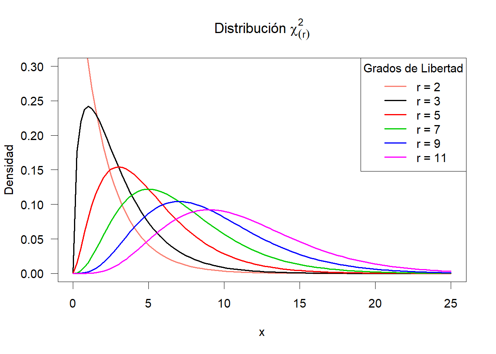
Teorema central del límite
Suponga que \(X_1,\dots,X_n\) es una muestra aleatoria de una población con media \(\mu\) y varianza \(\sigma^2\). Sea \(\bar{X}\) la media muestral que depende de \(n\) entonces cuando \(n \rightarrow \infty\) se cumple que:
\[\Large \cfrac{\bar{X}-\mu}{\frac{\sigma}{\sqrt{n}}} \stackrel{aprox}{\underset{n \rightarrow \infty}{\widetilde{\quad\quad}}} N(0,1)\]
Entre mayor sea \(n\) mejor es la aproximación. Si la distribución de la muestra es simétrica y continua, los tamaños muestrales relativamente pequeños, permiten obtener buenas aproximaciones. Si la distribución es discreta, se requiere de tamaños muestrales grandes.
\[P(\bar{X}<a)=P\left(\frac{\bar{X}-\mu}{\sigma/\sqrt{n}}<\frac{\bar{X}-a}{\sigma/\sqrt{n}}\right) \approx P\left(Z<\frac{\bar{X}-a}{\sigma/\sqrt{n}}\right)\]
Si se desconoce el valor de \(\sigma^2\) y \(n\) es grande, se puede reemplazar \(\sigma^2\) por \(S^2\).
\[\Large \cfrac{\bar{X}-\mu}{\frac{S}{\sqrt{n}}} \stackrel{aprox}{\underset{n \rightarrow \infty}{\widetilde{\quad\quad}}} N(0,1)\]
El nivel total de colesterol en cierta población tiene una distribución aproximadamente normal, con una media de 200 mg/100ml y una desviación estándar de 20 mg/100ml. Si se realizan 49 exámenes de manera aleatoria de esta población ¿Cuál es la probabilidad de que el nivel de colesterol promedio de esta muestra esté entre 198 y 203 mg/100ml? \[E[X_i]=200 \quad \text{y} \quad Var[X_i]=400\] Ahora, \[\begin{align*} P(198<\bar{X}<203)&=P\left(\frac{198-\mu}{\sigma/\sqrt{n}}<\frac{\bar{X}-\mu}{\sigma/\sqrt{n}}<\frac{203-\mu}{\sigma/\sqrt{n}}\right)\\\\ &=P\left(\frac{198-200}{20/\sqrt{49}}<\frac{\bar{X}-\mu}{\sigma/\sqrt{n}}<\frac{203-200}{20/\sqrt{49}}\right)\\\\ &\approx P(-0.7<Z<1.05)\\ &=\Phi(1.05)-\Phi(-0.7)\\ &=0.8531409 - 0.2419637\\ &=0.6111773 \end{align*}\]
Suponga que se realiza un estudio sobre el salario de los egresados del Instituto Universitario de Educación Física y Deporte una vez finalizan su pregrado y se insertan en el mercado laboral. Para ello, se le pregunta a 15 egresados seleccionados de forma aleatoria y se les pregunta cuál es el salario que devengan actualmente, obteniendo los siguientes resultados en millones de pesos:
\[1.78\quad2.93\quad1.22\quad1.27\quad1.17\\1.03\quad1.24\quad2.07\quad2.04\quad1.28\\1.53\quad0.98\quad1.73\quad1.38\quad3.24\]
Basados en la información anterior, calcule la probabilidad de que la proporción de egresados que tienen un salario superior a 2 millones de pesos sea mayor al 40%.
Como no nos hablan de los salarios sino de la proporción de aquellos que ganaran más de 2 millones de pesos, entonces tenemos que contar cuántos ganan más de esa cantidad.
Menos de 2M 2M o más Total 11 4 15 Entonces la proporción de egresados que ganan más de dos millones es \(\hat{p}=4/15 = 0.26667\), entonces es posible calcular la probabilidad \(P(p>0.4)\) aplicando el teorema central del límite: \[\begin{align*} P(p>0.4) &= P(\hat{p}-p < 4/15-0.4)\\ &=P \left(\cfrac{\hat{p}-p}{\sqrt{\frac{p(1-p)}{n}}} < \cfrac{4/15-0.4}{\sqrt{\frac{(0.4)(0.6)}{15}}} \right)\\\\ &=P(Z < -1.054093)\\ &=P(Z > 1.054093)\\ &=0.1459203 \end{align*}\] Y por tanto, la probabilidad de la proporción de egresados del Instituto que tienen un salario superior a 2 millones es del 14.59%.
Basados en la información de los salarios, calcule la probabilidad de que el salario promedio de todos los egresados sea a lo más de 1.8 millones de pesos, si se sabe, que los salarios se distribuyen normalmente con desviación estándar de 500 mil de pesos.
En este caso, estamos interesados en calcular la probabilidad de que la media poblacional del salario de los egresados, sea como máximo de 1.8 millones de pesos, esto es \[P(\mu \leq 1.8)\] Ahora, como sabemos que la distribución de los salarios de los egresados sigue una distribución normal, entonces el cálculo de probabilidad basado en la muestra aleatoria se calcula aplicando el teorema central del límite. De los datos tenemos que \(\bar{X}=1.659333\) y \(\sigma=0.5\), así la probabilidad está dada por: \[\begin{align*} P(\mu \leq 1.8)&=P(−\mu \geq - 1.8)\\ &=P(\bar{X}−\mu \geq 1.659333−1.8)\\ &=P \left(\cfrac{\bar{X}-\mu}{\frac{\sigma}{\sqrt{n}}} \geq \cfrac{1.659333−1.8}{\frac{0.5}{\sqrt{15}}} \right)\\ &=P(Z \geq -1.089602)\\ &=P(Z \leq 1.089602)\\ &=0.8620557 \end{align*}\] Por lo tanto la probabilidad de que el salario promedio los egresados del Instituto sea como máximo de 2 millones de pesos, es del 86.21%
Inferencia sobre un parámetro
Hasta ahora los estimadores estudiados son puntuales, es decir, exhiben un solo valor como estimación del parámetro de interés. Pero en muchos casos esto no es suficiente. A veces se requiere de un rango de posibles valores para el parámetro de interés, es decir, un intervalo real donde se cree estará el valor del parámetro con una alta confianza.
Sea \(\theta\) un parámetro de interés y \(\hat{\theta}\) un estimador puntual de \(\theta\) en un intervalo real de la forma \((L_\hat\theta , U_\hat\theta)\) talque \((L_\hat\theta < \theta < U_\hat\theta)\), donde \(L\) y \(U\) dependen de y de la distribución de \(\hat\theta\).
Cada muestra aleatoria proporcionará un valor diferente para \(\hat\theta\) y por lo tanto valores diferentes para \(L\) y \(U\). Así, los extremos del intervalo en cuestión se convierten en variables aleatorias. El intervalo \((L , U)\) es llamado Intervalo Aleatorio. Usando \(\hat\theta\) y su distribución es posible determinar \(L\) y \(U\) tales que:
\[P(L_\hat\theta < θ < U_\hat\theta) = 1 − \alpha,\quad \alpha \in (0,1)\]
Para una muestra particular se obtiene el intervalo \((l , u)\) donde se espera esté el verdadero valor de \(\theta\), Este intervalo será llamado un Intervalo de Confianza al \(100(1 − \alpha)\%\) para \(\alpha\), además \(l\) y \(u\) son llamados Límites de Confianza.
Intervalos de confianza para la proporción
Sea \(X\) una variable aleatoria tal que \(X\sim bin(n,p)\). El Teorema Central del Límite garantiza que:
\[\cfrac{X-np}{\sqrt{np(1-p)}} \stackrel{aprox}{\underset{n \rightarrow \infty}{\widetilde{\quad\quad}}} N(0,1)\]
Un estimador insesgado para \(p\) es \(\bar{p}=X/n\), entonces:
\[\frac{X-np}{\sqrt{np(1-p)}}=\frac{n[X/n-p]}{\sqrt{np(1-p)}}=\frac{X/n-p}{\sqrt{p(1-p)/n}}\stackrel{aprox}{\underset{n \rightarrow \infty}{\widetilde{\quad\quad}}} N(0,1)\]
Entonces un intervalo de confianza para \(\hat{p}\) es de la forma:
\[\hat{p}\, \pm\, Z_{\alpha/2}\sqrt{\frac{\hat{p}(1-\hat{p})}{n}}\]
En una muestra de 85 recién nacidos, 10 presentaron riesgo de desnutrición. ¿Cuál es la proporción real de recién nacidos con riesgo de desnutrición con una confianza del 95%?
Sea \(X\) el número de recién nacidos con riesgo de desnutrición, entonces \(X\sim bin(85,p)\). Del enunciado se tiene que: \(\hat{p}=x/85=10/85=0.1176471\)
Un Intervalo de Confianza (IC) aproximado al 95% para \(p\) es de la forma: \[\frac{10}{85}\,\pm\,1.96\sqrt{\frac{(10/85)(75/85)}{85}}\,\Rightarrow\,0.1176\,\pm\,0.0685\,\Rightarrow(0.0492;0.1861)\] En conclusión, con una confianza del 95% la proporción de recién nacidos que presentan riesgos de desnutrición se estiman entre (0.0492;0.1861), o (4.92%;18.61%).
El siguiente ejercicio de simulación muestra el concepto de la probabilidad de los intervalos de confianza y la influencia de los tamaños de muestra
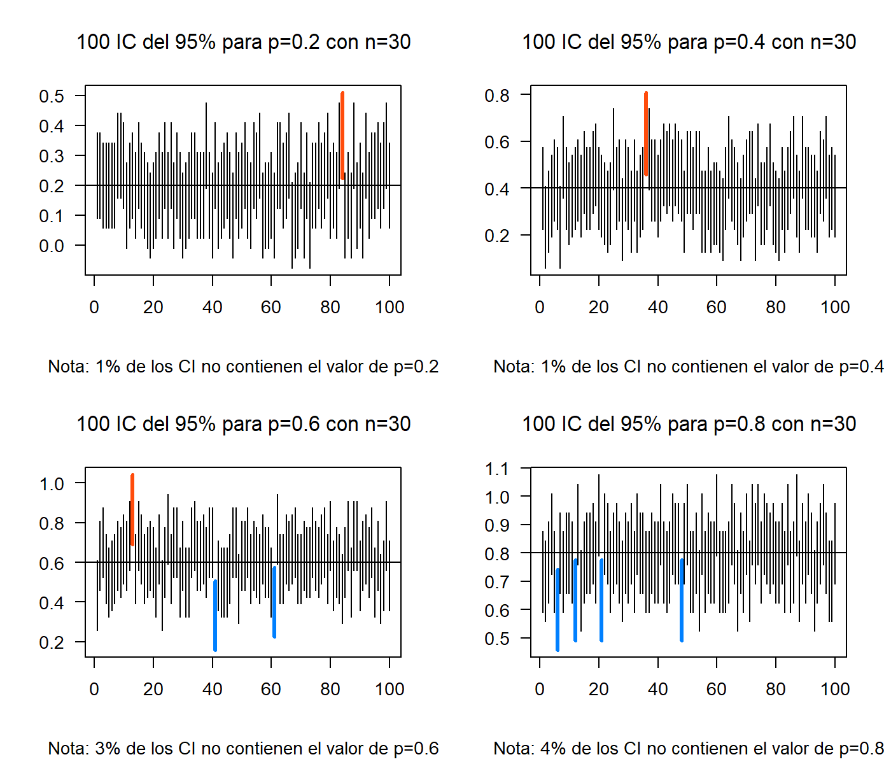
Cuando aumenta el tamaño de muestra los intervalos tienen menor amplitud, lo cual es lo deseado, ya que la amplitud es una medida de precisión.
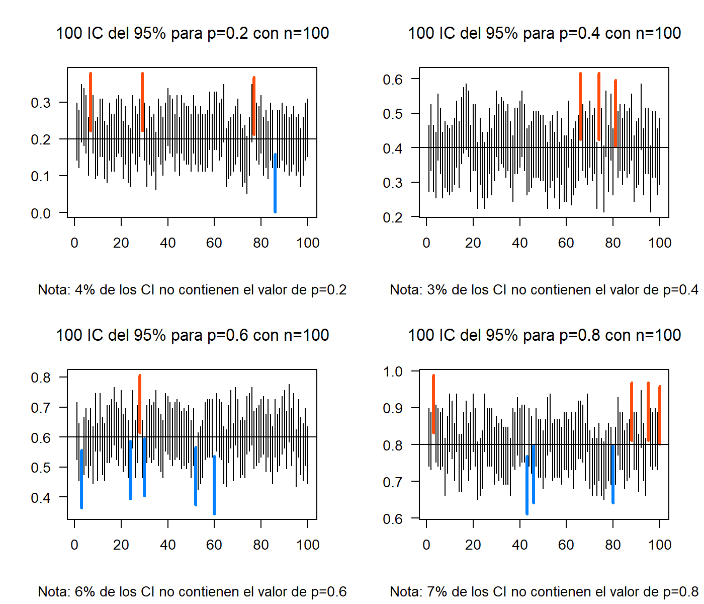
En términos de la cobertura del intervalo, se espera que para cualquier valor estimado de \(p\) la probabilidad de cobertura sea cercana al nivel de confianza \(100(1-\alpha)\%\).
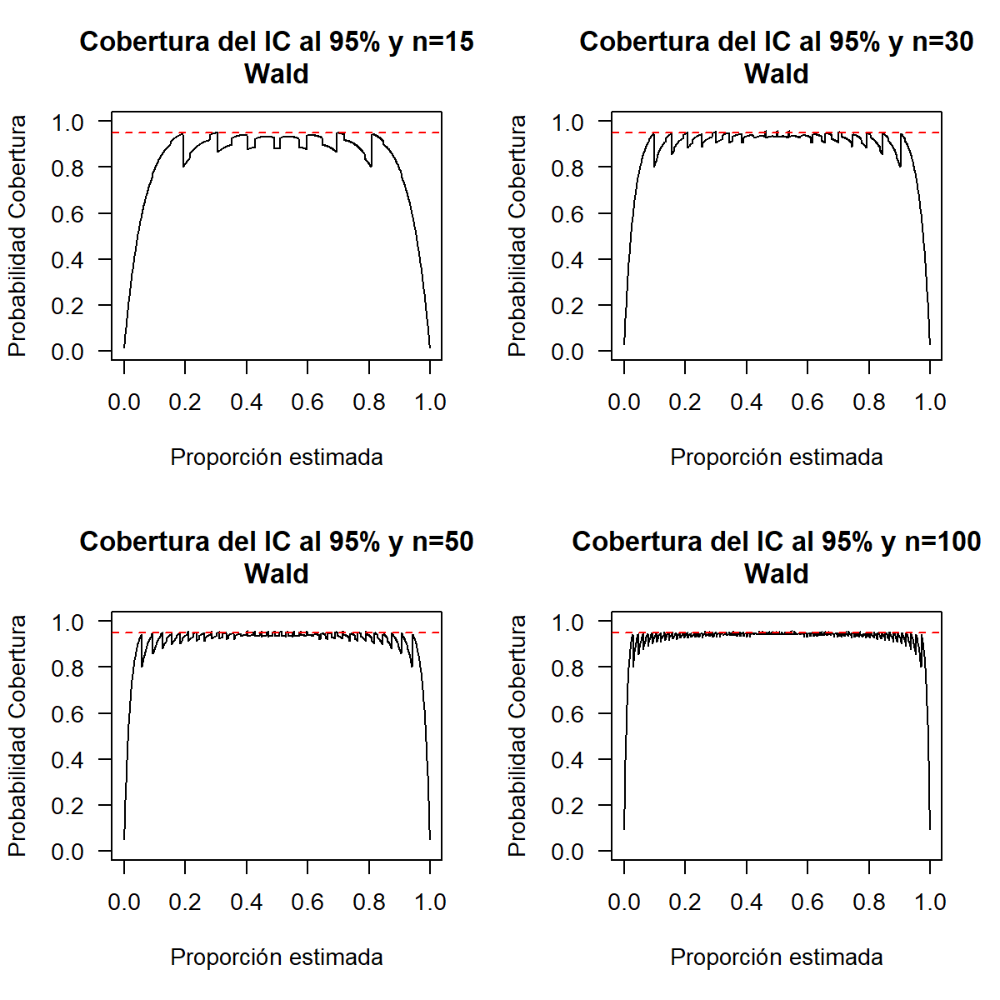
Este es el inconveniente que presenta esta propuesta de intervalo para la proporción llamada método Wald. En la literatura existe muchas propuestas para intervalos de confianza para la proporción, de hecho, sigue siendo un caso de estudio por varios estadísticos.
En 1934 Clopper y Pearson presentaron una propuesta para los intervalos de confianza basados en la Distribución Beta que, a su vez, está relacionada con la Distribución F, sin embargo, lo complejo de sus cálculos no le dio el protagonismo para la época. Ahora este intervalo se ha puesto a prueba gracias a los avances computacionales haciendo fácil el cálculo y entregando mejores resultados en términos de probabilidad de cobertura.
\[B(\alpha/2;\,x,\,n-x+1)<\hat{p}<B(1-\alpha/2;\,x+1,\,n-x)\]
O parametrizada con la Distribución F
\[{\displaystyle \left(1+{\frac {n-x+1}{x\,F\!\left[{\frac {\alpha }{2}};2x,2(n-x+1)\right]}}\right)^{-1}<\hat{p} <\left(1+{\frac {n-x}{(x+1)\,\,F\!\left[1-{\frac {\alpha }{2}};2(x+1),2(n-x)\right]}}\right)^{-1}}\]
En R es fácil hacer este cálculo, el primer método es hacer la fórmula con qbeta y otra forma es con el paquete PropCIs
## [1] 0.05788185## [1] 0.2057331## [1] 0.05788185 0.20573312
## attr(,"conf.level")
## [1] 0.95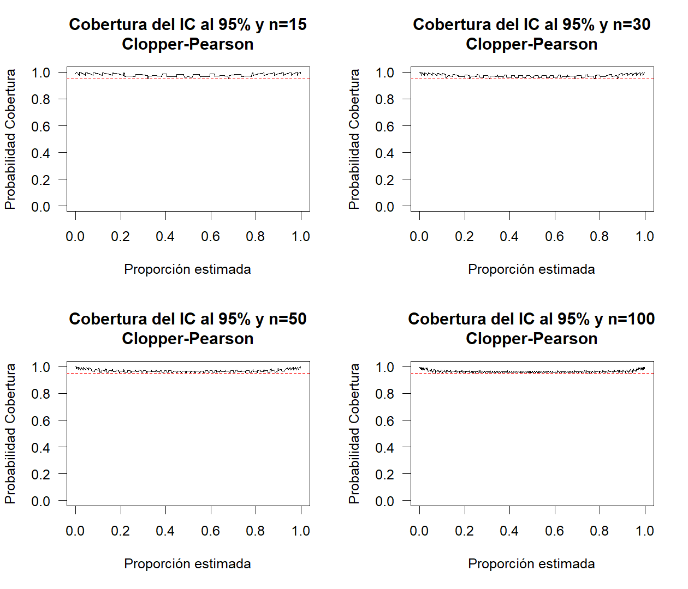
La RedPaPAz realizó una encuesta a los hogares más vulnerables y que no entienden el etiquetado regular de alimentos en la ciudad de Medellín. Esta encuesta servirá como guía para plantear la política pública para el cambio de las etiquetas de información nutricional, se encontró que 472 hogares de 595 encuestados adquieren productos ultraporcesados. Con un nivel de confianza del 95% ¿Cuál es la verdadera proporción de hogares que adquieren productos ultraporcesados? ¿Qué significa este resultado?
Metro Salud en conjunto con la Universidad de Antioquia realizaron un estudio relacionado con el incremento de peso en los niños y niñas menores de 12 años en los colegios de Medellín. Se recolectó una muestra de 800 niños de los cuales el 57% fueron niñas, los resultados arrojaron que 63 niñas se clasifican en obesidad. Con un nivel de confianza del 97% ¿Cuál es la verdadera proporción de niñas en obesidad?
Gracias al impacto de las redes sociales y la desinformación de influencers que se declaran expertos en nutrición, calidad de vida y salud, se piensa que la cantidad de bebés que no reciben leche materna ha disminuido significativamente, principalmente en los estratos Altos. Se sabe que la prevalencia de lactancia materna en esta población hace 5 años es del 75%. Neonatólogos del San Vicente realizaron una investigación en 254 bebés, de los cuales 171 reciben lactancia materna. Con un nivel de confianza del 95% ¿Cuál es la verdadera proporción de bebes que reciben leche materna? ¿Este valor disminuyó con respecto al quinquenio pasado?
La medidas estatales tomadas durante la pandemia del COVID-19 se han perdido empleos en el país. El DANE realizó un estudio en todo el país para determinar el nuevo porcentaje de desempleo, se realizó una encuesta 1876 personas de las cuales 259 manifestaron estar desempleadas. Con un nivel de confianza del 90% ¿Cuál es la verdadera proporción de desempleados en Colombia? Si se sabe que antes de la pandemia, el índice de desempleo era del 10.2% ¿Aumentó significativamente la cifra de desempleo?
Realice los ejercicios del apartado 6.5 de la lectura sugerida.
Intervalos de confianza para la media
La estimación del parámetro \(\mu\) a través de intervalos de confianza, dependerá de dos situaciones.
- Si la muestra aleatoria es de tamaño relativamente grande y no necesariamente provenga de una distribución normal.
- Si la muestra aleatoria proviene de una distribución normal.
IC para poblaciones no normales
Sea \(X_1,\dots,X_n\) una muestra aleatoria de una población con media desconocida y varianza conocida \(\mu\). Un intervalo de confianza para \(\mu\) con muestras grandes al \(100(1-\alpha)\%\) está dado por:
\[\bar{X}\,\pm\,Z_{1-\alpha/2}\frac{\sigma}{\sqrt{n}}\]
Una Nutricionista de una clínica es la encargada de los planes de ganancia de peso en embarazadas. De acuerdo a los parámetros se sabe que la variación de la ganancia de peso al final de la gestación es de 4 kilos. Se escogen al azar 45 embarazadas adultas con IMC normal y se registra sus ganancias de peso al final de la gestación y la ganancia promedio resultó en 14.5 kg. Calcule el I.C. al 95% para la ganancia de peso media real de estas embarazadas.
Se tiene que \(X_1,\dots,X_{45}\) es una muestra aleatoria que representa las ganancias de peso de las embarazadas de 45 mujeres, además de la muestra se obtiene que \(\bar{X}=14.5\,\text{kg}\)
Un IC al 95% para \(\mu\) está dado por: \[14.5\,\pm\,Z_{0.975}\frac{4}{\sqrt{45}} \,\Rightarrow\, (13.3313;\,15.6687) \]
En el caso de que en la muestra aleatoria no se tenga información de \(\sigma\), es decir, que tiene varianza desconocida entonces se puede reemplazar \(\sigma^2\) por \(S^2\) siempre y cuando se tenga tamaños de muestra grandes tal que:
\[\bar{X}\,\pm\,Z_{\alpha/2}\frac{S}{\sqrt{n}}\]
El siguiente ejercicio de simulación muestra el concepto de la probabilidad de los intervalos de confianza y la influencia de los tamaños de muestra
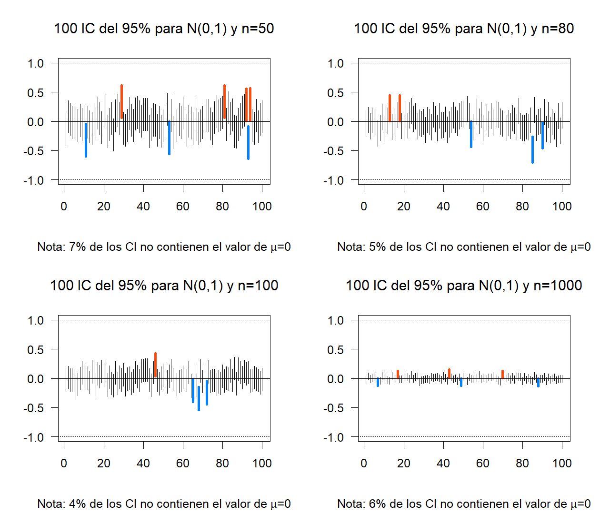
En términos de la cobertura del intervalo, se espera que para cualquier valor estimado de \(\mu\) la probabilidad de cobertura sea cercana al nivel de confianza \(100(1-\alpha)\%\).

En R no existe una función como tal para calcular intervalos de confianza para la distribución normal, sin embargo, no es difícil realizar su programación
ICNorm <- function(Xbar,sigma,n,alpha=0.05){
ic <- Xbar+c(-1,1)*qnorm(1-alpha/2)*sigma/sqrt(n)
return(ic)
}
# Para el ejemplo de la ganancia de peso
ICNorm(Xbar = 14.5,sigma = 4,n = 45,alpha=0.05)## [1] 13.3313 15.6687IC para poblaciones normales
Sea \(X_1,\dots,X_n\) una muestra aleatoria de una población normal \(N(\mu,\sigma^2)\) con media desconocida y varianza conocida. Un intervalo de confianza para \(\mu\) al \(100(1-\alpha)\%\) está dado por:
\[\bar{X}\,\pm\,Z_{\alpha/2}\frac{\sigma}{\sqrt{n}}\]
Una planta de procesamiento de alimentos preparan una nueva línea de pechugas de pollo. Se sabe que la energía aportada por las pechugas de pollo tiene una distribución aproximadamente normal. De acuerdo a la investigación de los nutricionistas de la planta se ha encontrado que la dispersión en la energía es aproximadamente de 0.05 kcal. Se escogen al azar 15 pechucgas y se estima su aporte energético. La energía promedio resultó en 74.04 kcal.
- Calcule el I.C. al 95% para la energía media real de las pechugas.
- Si se desea que la precisión del intervalo sea inferior a 0.01, con una confianza del 95%. ¿Cuál debe ser el mínimo tamaño de muestra para cumplir éste objetivo?
Para la primera parte se tiene que \(X_1,\dots,X_{15}\) es una muestra aleatoria que representa la energía de las 15 pechugas de pollo, cada \(X_i\sim N(\mu,0.05^2)\), además de la muestra se obtiene que \(\bar{X}=74.04\,\text{kcal}\)
Un IC al 95% para \(\mu\) está dado por: \[74.04\,\pm\,Z_{0.025}\frac{0.05}{\sqrt{15}} \,\Rightarrow\, (74.0147;\,74.0653) \] La precisión de un intervalo está dado por \(max\{\theta-L,U-\theta\}\), en este caso tenemos un intervalo simétrico entonces la magnitud está dada por el término del error \(Z_{0.025}(0.05/\sqrt{n})\)$, entonces: \[\begin{align*} \frac{1.96\times 0.05}{\sqrt{n}}&<0.01\\\\ \frac{1.96\times0.05}{0.01}&<\sqrt{n}\\\\ n&>96.03647 \approx 97 \end{align*}\]
## [1] 74.0147 74.0653## [1] 74.03005 74.04995## [1] 0.00995021Suponga que \(X_1,\dots,X_n\) es una muestra aleatoria de una \(N(\mu,\sigma^2)\), si la varianza es desconocida la distribución de \(\bar{X}\) estandarizada NO es normal. Si reemplazamos \(\sigma\) por \(S\), el estadístico resultante es:
\[T=\cfrac{\bar{X}-\mu}{\frac{S}{\sqrt{n}}} \sim t_{(n-1)}\]
La distribución t-de Student es una distribución de probabilidad que surge del problema de estimar la media de una población normalmente distribuida cuando el tamaño de la muestra es pequeño. Su f.d.p está dada por:
\[f(x) = \frac{\Gamma\left(\dfrac{\nu + 1}{2}\right)}{\Gamma\left(\dfrac{\nu}{2}\right)\sqrt{\pi\nu}\sigma} \left[1+\frac{1}{\nu}\left(\frac{x-\mu}{\sigma}\right)^2\right]^{-\tfrac{\nu+1}{2}}\]
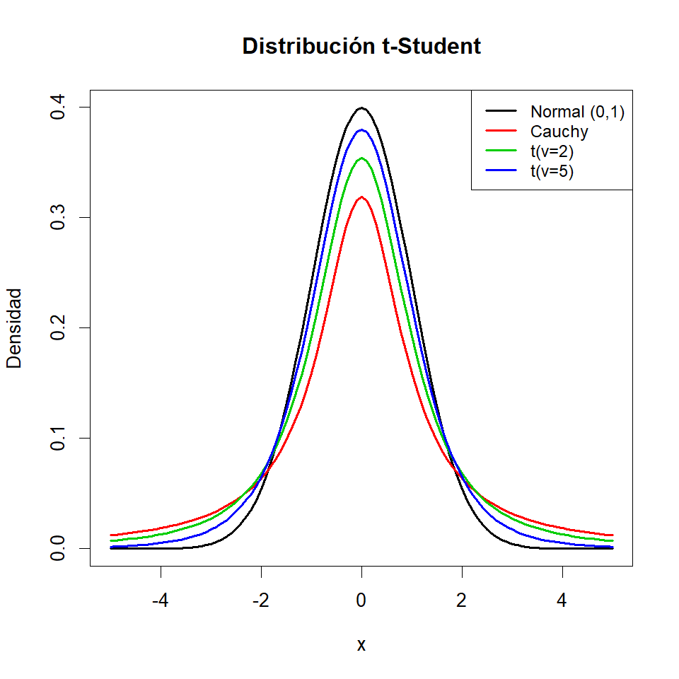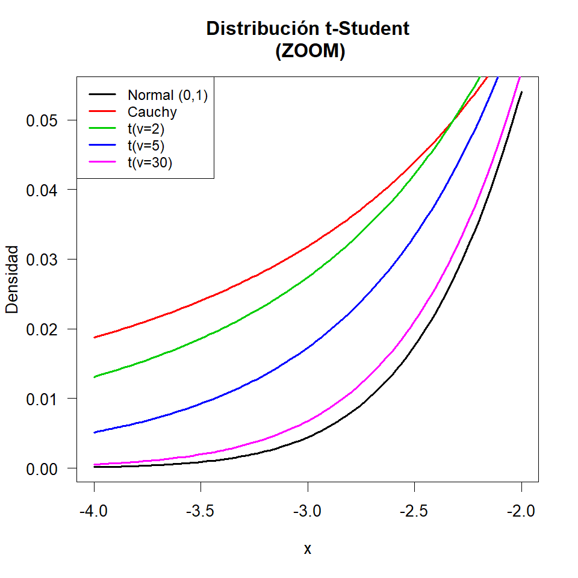
En esta gráfica podemos apreciar la realción que existe entre las distribuciones Cauchy, t-de Student y la Normal Estandarizada. Se observa que la distribución t-de Student con \(v = 1\) grado de libertad es una distribución Cauchy la cual es la más achatada y presenta las colas mas pesadas en comparación las demás distribuciones presentes en la gráfica. Además se puede evidenciar que a medida que aumentan los grados de libertad en la distribución t, ésta tiende a la Normal.
Realizando un proceso similar al caso de muestras aleatorias con media desconocida, se puede encontrar que un IC al \(100(1 − \alpha)\%\) para \(\mu\) es de la forma:
\[\bar{X} \pm t_{(\alpha/2,\,n-1)}\frac{S}{\sqrt{n}}\]

De acuerdo a estudios sobre la fuerza prensil manual en adultos mayores que la fuerza de prensión se distribuye normalmente. Se toma una muestra aleatoria de 16 adultos mayores y se obtiene un fuerza de prensión promedio para la mano débil de 15.63 kgf con una desviación estándar de 5.18 kgf. Estime la fuerza prensil manual débil de los adultos mayores usando un IC al 97%.
Sea \(X_1,\dots,X_{16}\) una muestra aleatoria que representa la fuerza prensil de la mano débil de los adultos mayores. Suponga que \(E[X_i]=\mu\) y \(Var[X_i]=\sigma^2\) ambas desconocidas, además del enunciado se tiene que \(\bar{x}=15.63\), \(S=5.18\) y \(n=16\) entonces un IC al 97% para \(\mu\) está dado por: \[\begin{align*} \bar{X}\,&\pm\,t_{0.985,n-1}\frac{S}{\sqrt{n}}\\\\ 15.63\,&\pm\,t_{0.985,15}\frac{5.18}{\sqrt{16}}\\\\ 15.63\,&\pm\,2.397005\frac{5.18}{\sqrt{16}}\\ 15.63\,&\pm\,3.104122 \end{align*}\] Se espera que la fuerza prensil media real de la mano débil de los adultos mayores esté entre 12.53 kgf y 18.73 kgf con una confianza del 97%.
En R no hay forma de hacer estimaciones de por intervalo con estadísticos calculados, la única forma es con un vector de datos o una base de datos. No obstante, no es difícil programar una función para calcular intervalos de confianza para la t-student cuando se tienen los estadísticos calculados.
ICt <- function(Xbar,sigma,n,alpha=0.05){
ic <- Xbar+c(-1,1)*qt(p = 1-alpha/2,df = n-1)*sigma/sqrt(n)
return(ic)
}
# Para el ejemplo de la resistencia
ICt(Xbar = 15.63,sigma = 5.18,n = 16,alpha = 0.03)## [1] 12.52588 18.73412Resumen

La asociación de usuarios (ASU) sospecha que las gasolineras no sirven la cantidad pactada. Por ley, se acepta que el dispensador tenga un error \(\sigma = 10\text{ ml}\) por cada litro que expende. Se realizó una muestra al azar de 100 pedidos de 1 litro, la media observada ha sido 995 ml. Con un nivel de confianza del 95% ¿Cuál es el verdadero promedio de gasolina expendido?
El tiempo utilizado en la atención al paciente sigue una distribución normal. Para conocer el tiempo medio empleado en este servicio, se han recogido 20 observaciones que han tardado, en minutos un pormedio de 34 y una desviación estándar de 2.3. Calcule un intervalo de confianza al 97% para el tiempo medio de atención.
Una empresa turística se prepara para las vacaciones de verano, para poder ajustar el presupuesto de inversión toma de referencia la evaluación de ganancias del años pasado, en el cual atendieron 154 turistas con un gasto promedio de \(\$678\) y una desviación de \(\$45\). Calcule un intervalo de confianza al 95% de los gastos promedios de los turistas.
En un equipo de fútbol desea establecer un parámetro de cumplimiento para los fichajes, entre el cuerpo médico y técnico decidieron que el VO2max podría ser el indicador para mantener el alto rendimiento del equipo. Se realizaron pruebas a los 15 jugadores principales del equipo, y el promedio de VO2max fue de 57.92 mml/min/kg con una desviación de 2.8 mml/min/kg. Asumiendo los datos distribuyen normal, ¿Cuáles son los parámetros de aceptación para los próximos fichajes con una confianza del 90%?
El equipo olimpico de Taekwondo quiere estimar la velocidad de reacción de sus deportistas para compararlo con los del equipo Coreano. Se realizan pruebas a los 12 miembros del equipo, donde el promedio de velocidad de reacción es de 0.38 segundos con una desviación de 0.03 segundos. Con un nivel de confianza del 95%, ¿cuál es la velocidad de reacción media? Asuma que los datos distribuyen normalmente.
Realice los ejercicios del apartado 6.2 y 6.3 de la lectura sugerida.
Técnicas de Muestreo
El muestreo consiste en la selección de un conjunto representativo de una población, con el fin de observar y analizar su comportamiento. El muestreo en esencia se divide en dos, muestreo probabilístico y muestreo no probabilístico, los cuales hacen referencia a la aleatorización y homogeneidad de la muestra o simplemente no se considera.
Muestreo no probabilistico
Una muestra no es aleatoria en la medida que los elementos de la población son seleccionados por medio de métodos que están sujetos al juicio subjetivo de los investigadores, este procedimiento está sujeto a errores considerables cuando se emplea a poblaciones grandes en las que no se garantiza la homogeneidad. También se considera una muestra no probabilística si no se tiene información alguna de la población.
Un caso específico de este tipo de muestreo es cuando la muestra es dirigida, es decir, el investigador es quién considera representativa una muestra y selecciona a su gusto las unidades para el estudio, por ejemplo en una encuesta de vivienda en una zona afectada por un desastre natural, el investigador decidió elegir a 10 familias –de 10000 que hay en el lugar– para evaluar las necesidades más urgentes de la zona. También pudo haber hecho un llamado a las familias para que dieran sus opiniones voluntariamente.
En muchos casos no es posible contar con muestras aleatorias y homogéneas, como es el caso de algunas enfermedades de baja prevalencia, en este tipo de casos se considera utilizar todas unidades posibles para realizar estudios. En el caso del muestreo de voluntarios, muy común en ensayos clínicos, cuando se calcula un tamaño de muestra en muchos casos no es posible cumplir con el número objetivo y en cambio se considera a todos los voluntarios como la muestra.
Algunas técnicas bayesianas también utilizan este tipo de muestreo, pero con el fundamento de que los encuestados sean expertos en la materia a estudiar, por ejemplo si se quiere determinar el comportamiento de la construcción de edificaciones en una ciudad, los bayesianos consideran a los expertos en la materia para obtener la información, expertos que trabajen directamente en el campo, tengan suficiente experiencia y reconocimiento.
Muestreo probabilistico
Cuando se habla de una muestra probabilística se refiere a una muestra aleatoria. Una muestra es aleatoria cuando los elementos que constituyen la población tienen la misma posibilidad de ser seleccionados. Existen numerosos procedimientos en la aplicación de este tipo de muestreo, pero en este módulo se presentarán los más utilizados limitándose a una descripción básica y a la determinación de tamaños de muestra.
En un muestreo probabilistico se debe estructurar un plan de muestreo, el cual debe contener:
Universo o población: el conjunto de todos los elementos definidos antes de la selección de la muestra. Una población adecuadamente designada debe definirse en términos de: elementos, unidades de muestreo, alcance y tiempo.
Elemento: es la unidad a cerca de la cual se solicita información. Este suministra la base del análisis que se llevará a cabo. Los elementos más comunes en investigación de mercados son los individuos. En otros casos los elementos podrían ser productos, almacenes, empresas, familias, hogares etc.
Unidad de muestreo: elemento (os) disponibles para su selección en alguna etapa del proceso de muestreo. En el tipo de muestreo más simple el de una sola etapa, las unidades y los elementos de muestreo son lo mismo, esto se le llama muestreo directo y de una sola etapa. Cuando se quiere llegar a un subconjunto de elementos se plantean etapas de muestreo.
Marco muestral: lista de todas las unidades de muestreo disponibles para su selección en una etapa del proceso de muestreo. Puede ser una lista de alumnos, una lista de votantes inscritos, lista de empleados, direcciones de hogares o incluso un mapa. Una vez especificada la población después se busca un buen marco muestral.
Población del estudio: es el conjunto de elementos del cual se saca la muestra. Anteriormente se definió población como el conjunto de los elementos definidos antes de seleccionar la muestra. Infortunadamente surgen dificultades prácticas que hacen que una muestra real se tome de una población un tanto diferente de la que se definió a priori. A veces por que el marco muestral no incluye a toda la población.
Muestreo Aleatorio Simple (MAS)
Se utiliza principalmente cuando las poblaciones son relativamente pequeñas, o cuando la población se caracteriza por su homogeneidad (poca variabilidad), en este caso las probabilidades de selección de los elementos son casi iguales y constantes durante el proceso, la homogeneidad garantiza que las muestras calculadas sean pequeñas, traduciéndose en ahorros en términos de costos, tiempo y recursos humanos.
En este muestreo se presentan dos formas de recolectar la información, en el primer caso se selecciona la unidad, se toman las mediciones necesarias y se devuelve a la población antes de extraer la siguiente, en este caso se dice que el muestreo es con reemplazo. Si se selecciona la unidad, se toman las mediciones necesarias y se deshecha de la población, se dice que el muestreo es sin reemplazo.
La dificultad con el proceso con reemplazo es que existe la probabilidad de volver a seleccionar la misma unidad muestral que se estudió, por ejemplo si es una encuesta telefónica, existe una probabilidad de seleccionar el mismo número; por otra parte, si son elementos incontables como la sal, el agua o el cemento, no hay inconveniente de devolver la unidad muestral, pues ésta nuevamente homogeneizará con la población.
Para calcular un tamaño muestral basado en el MAS, se debe tener en cuenta el margen de error, el nivel de confianza y los estimadores puntuales que han sido analizados en el desarrollo de éste texto. Al ser un muestreo probabilístico, el requerimiento principal es conocer en lo posible los parámetros de la población o en su defecto los estadísticos estimados.
Tamaño de muestra para la proporción
Para una proporción el tamaño muestral, cuando se conoce el valor estimado, se calcula con la siguiente fórmula.
\[n=\cfrac{(Z_{1-\alpha/2})^2\hat p \hat q}{E^2}\]
Cuando se tiene el tamaño poblacional, se puede hacer el cálculo del tamaño muestral para poblaciones finitas.
\[n=\cfrac{N(Z_{1-\alpha/2})^2\hat p \hat q}{NE^2+(Z_{1-\alpha/2})^2 \hat p \hat q}\]
El margen de error debe ser determinado por el investigador, dado que no puede ser calculado, además nótese que si el margen de error es muy grande el tamaño muestral será muy pequeño. En caso de que no se conozca los valores estimados, se considera que la proporción de éxitos y fracasos es 0.5.
\[n=\cfrac{(Z_{1-\alpha/2})^20.25}{E^2} \qquad n=\cfrac{N(Z_{1-\alpha/2})^20.25}{NE^2+(Z_{1-\alpha/2})^20.25}\]
En una cadena de gimnasios se desea realizar un estudio de los usuarios que presentan lesiones por el mal uso de los equipos, con el fin de establecer cambios administrativos en las sedes. Un sondeo previo estableció que la proporción de usuarios que presentaron lesiones dentro del gimnasio es del 28%, establecer un tamaño muestral para realizar el estudio con un margen de error del 4% y un nivel de significancia del 5%.
Como no se conoce el tamaño de la población, entonces el tamaño de muestra adecuado es: \[\begin{align*} n=&\cfrac{(Z_{1-\alpha/2})^2\hat p \hat q}{E^2}\\ =&\cfrac{(Z_{0.975})^2 (0.28)(0.72)}{0.04^2}\\ =&\cfrac{(1.96)^2 (0.2016)}{0.0016}\\ =&\cfrac{(3.8416)(0.20168)}{0.0016}\\ =&\cfrac{0.7745}{0.0016}\\ =&484.0416 \approx 485 \end{align*}\] Si no tuvieramos información acerca de la proporción de usuarios lesionados, entonces se puede calcular el tamaño de muestra basado en el peor de los casos. \[\begin{align*} n=&\cfrac{(Z_{1-\alpha/2})^2 0.25}{E^2}\\ =&\cfrac{(3.8416)(0.25)}{0.0016}\\ =&\cfrac{0.9604}{0.0016}\\ =&600.25 \approx 601 \end{align*}\] Supongamos que el número de afiliados es de 2143, entonces el tamaño de muestra es: \[\begin{align*} n=&\cfrac{N(Z_{1-\alpha/2})^2\hat p \hat q}{NE^2+(Z_{1-\alpha/2})^2 \hat p \hat q}\\ =&\cfrac{(2143)(3.8416)(0.2016)}{(2143)(0.0016)+(3.8416)(0.2016)}\\ =&\cfrac{1659.682}{3.8239}\\ =&434.0245 \approx 435 \end{align*}\]
En el ejemplo anterior se nota la diferencia de tamaños de muestra entre las posibles situaciones que puede tener un investigador:
Si se tiene sólo la información de la proporción de usuarios con lesiones, un tamaño muestral adecuado para realizar el estudio es de 485 con una confianza del 95%.
Si no se conoce la proporción de usuarios con lesiones, un tamaño muestral adecuado para realizar el estudio es de 601 con una confianza del 95%.
Si la población de afiliados es de 2143 y se conoce la proporción de usuarios lesionados, un tamaño muestral para realizar el estudio es de 435 con una confianza del 95%.
Cuando se calcula el tamaño de muestra, ese valor indica que es el mínimamente adecuado para estimar los parámetros de la población; el nivel de confianza escogido está asociado al intervalo de confianza que se calculará después de la recolección de los datos; y el error muestral está asociado a la dispersión de los datos.
Tenga en cuenta estos errores comunes a la hora de calcular tamaños de muestra:
No utilice \(E=4\), si se refiere a un margen de error del 4%, siendo el caso el margen es \(E=0.04\).
Asegúrese de sustituir bien el valor crítico \(Z_{1-\alpha/2}\) con la tabla de la distribución normal estándar, si la confianza es del 95%, hay que sustituirlo por 1.96 y no por 0.95.
Muchas personas creen de forma errónea que el tamaño muestral es un porcentaje de la población, observe que no es necesario conocer el tamaño de la población para calcular un tamaño de muestra.
En algunos casos los estudios previos pierden vigencia, por ejemplo si se quiere observar la proporción de personas con celular, no podemos remitirnos a un estudio de 1994 debido a que el acceso a esa tecnología era limitado en comparación a nuestros tiempos, en estos casos trate de utilizar el tamaño muestral más grande.
Tamaño de muestra para la media
Cuando no se conoce el tamaño de la población, el cálculo del tamaño de muestra es el siguiente:
\[n=\cfrac{(Z_{1-\alpha/2})^2\sigma^2}{E^2}\]
Cuando se tiene el tamaño poblacional, se puede hacer el cálculo del tamaño muestral para poblaciones finitas.
\[n=\cfrac{N(Z_{1-\alpha/2})^2\sigma^2}{NE^2+(Z_{1-\alpha/2})^2\sigma^2}\]
En las ecuaciones anteriores cabe notar que el requerimiento para calcular el tamaño de muestra es el conocimiento de la varianza poblacional, por otra parte el cálculo del tamaño muestral hace alusión a que la población pertenece a una distribución normal.
Por lo general no se conoce la dispersión de los datos, así que calcular un tamaño de muestra es más difícil, para este tipo de casos se consideran las siguientes opciones.
- Revisar estudios previos y utilizar la varianza muestral \(S^2\).
- Realizar un sondeo o una prueba piloto y calcular la varianza muestral.
- Si el estudio es pionero, utilizar la precisión y el margen de error de los instrumentos de medición.
- Si se conoce el valor mínimo y el valor máximo de la población, se puede estimar la desviación estándar: \(\sigma=rango/4\).
El perímetro de cintura es un indicador para detectar riesgo cardiovascular. En una ciudad interesa conocer el estado nutricional de la población basándose, como variable trazadora, en el perímetro de cintura. Se sabe por estudios previos que la desviación estándar de este indicador es de 12.5 cm, con un margen de error del 0.8 cm y un nivel de confianza del 95% ¿Cuál es el tamaño de muestra adecuado para estimar el promedio del perímetro de cintura?
De acuerdo con el enunciado, no tenemos la población de la ciudad, entonces el tamaño de muestra adecuado es: \[\begin{align*} n=&\cfrac{(Z_{1-\alpha/2})^2\sigma^2}{E^2}\\ =&\cfrac{(1.96)^2(12.5)^2}{0.8^2}\\ =&\cfrac{(3.8415)(156.25)}{0.64}\\ =&\cfrac{(600.2279)}{0.6}\\ =&937.8562 \approx 938 \end{align*}\] Supongamos que la ciudad cuenta con 525.430 habitantes, entonces el tamaño de muestra por población finita es: \[\begin{align*} n=&\cfrac{N(Z_{1-\alpha/2})^2\sigma^2}{NE^2+(Z_{1-\alpha/2})^2\sigma^2}\\ =&\cfrac{(525430)(3.8415)(156.25)}{(525430)(0.64)+(3.8415)(156.25)}\\ =&\cfrac{315377767}{336875.4}\\ =&936.1851 \approx 937 \end{align*}\]
Muestreo Aleatorio Estratificado (MAE)
Esta técnica de muestreo se aplica en poblaciones cuyas unidades tienen características de gran variabilidad. La intención de este muestro es clasificar las unidades en estratos de forma que las unidades en los subconjuntos sean homogéneos, pero si se observa la totalidad conserva la heterogeneidad.
Este tipo de muestreo es muy útil porque garantiza precisión en las mediciones por cada estrato y reduce los costos del muestreo ya que los tamaños muestrales tienden a ser menores. Lo más importante para utilizar esta técnica es determinar la variable que homogeniza las subpoblaciones, pues es el punto de partida para estratificar la población, sin embargo hay situaciones en que la estratificación dependerá del criterio del investigador.
\[\begin{align*} L \rightarrow & \text{número de estratos}\\ N_h \rightarrow & \text{número de unidades muestrales en el estrato }h\\ N \rightarrow & \text{Tamaño de la población } N=N_1+N_2+\dots+N_L \end{align*}\]
Este muestreo presenta dificultades ya que se necesita contar con un marco teórico que tenga información auxiliar, no es fácil crear los estratos y tampoco existe un número óptimo de estratos. Los estimadores no son tan simples de calcular como en el MAS, en general se utiliza estimaciones ponderadas.
Existen tres métodos fundamentales para calcular los tamaños muestrales por estratos, por asignación proporcional, por asignación de Neyman y por asignación óptima.
Asignación proporcional
La muestra se reparte entre los estratos proporcionalmente a los tamaños de éste. Este método se utiliza cuando los costos y la variabilidad no difieren mucho entre sí.
- Para estimar proporciones
\[n=\cfrac{\sum_{h=1}^LN_hp_hq_h}{N\left(\frac{E}{Z_{1-\alpha/2}}\right)^2+\frac{1}{N}\sum_{h=1}^LN_hp_hq_h}\]
- Para estimar promedios
\[n=\cfrac{\sum_{h=1}^LN_h\sigma_h^2}{N\left(\frac{E}{Z_{1-\alpha/2}}\right)^2+\frac{1}{N}\sum_{h=1}^LN_h\sigma_h^2}\]
Una vez determinado el tamaño de muestra, hay que repartirla proporcionalmente a cada estrato seleccionado.
\[n_h=n \frac{N_h}{N}\]
La estimación de proporciones apunta a estudios con datos cualitativos, similares a los ejemplos desarrollados a lo largo del módulo. La estimación de promedios o medias se realiza cuando se quiere estimar las medidas poblacionales.
Observe que para cada uno de los casos es necesario conocer la varianza poblacional de cada estrato y el tamaño sub-poblacional. En caso de que no se conozca la varianza sub-poblacional, puede usarse la varianza muestral de cada estrato, por otra parte si no se tiene información sobre estos estimadores, se recomienda realizar pruebas piloto para estimar las varianzas muestrales de los estratos.
Una Universidad está interesada en estimar los salarios promedios de sus empleados para planificar las inversiones futuras, los investigadores identificaron que existen grandes diferencias entre los salarios de los empleados y decidieron estratificar la población en tres partes: administrativos, docentes ocasionales y docentes vinculados. El balance del año anterior contiene la siguiente información en miles de pesos
Total Desv administrativos 2985 $8 Ocasionales 678 $53 Vinculados 137 $112 Calcular un tamaño de muestra considerando un error de 50 mil pesos y una confianza del 95%
De acuerdo con el enunciado tenemos \[L=3 \quad N=3800 \quad N_1=2985 \quad N_2=678 \quad N_3=137\\ E=5 \quad \alpha=0.05 \quad \sigma_1=8 \quad \sigma_2=53 \quad \sigma_3=112\] Con estos valores podemos calcular el tamaño de muestra total \[\begin{align*} n=&\cfrac{\sum_{h=1}^LN_h\sigma_h^2}{N\left(\frac{E}{Z_{1-\alpha/2}}\right)^2+\frac{1}{N}\sum_{h=1}^LN_h\sigma_h^2}\\ =&\cfrac{2985(8^2)+678(53^2)+137(112^2)}{3800\left(\frac{5}{1.96}\right)^2+\frac{1}{3800}[2985(8^2)+678(53^2)+137(112^2)]}\\ =&\cfrac{3814070}{24730.19+\frac{3814070}{3800}}\\ =&\cfrac{3814070}{25733.89}\\ =&148.2119 \approx 149\\ \end{align*}\] En total se necesitan un tamaño muestral de 149 empleados para estimar el promedio de los salarios, si se realiza una asignación proporcional, entonces el tamaño muestral para cada estrato es: \[n_1=149 \frac{2985}{3800} \approx 117 \quad n_2=149 \frac{678}{3800} \approx 27 \quad n_3=149 \frac{137}{3800} \approx 5\] Se necesita analizar los salarios de por lo menos 117 administrativos, 27 docentes ocasionales y 5 docentes vinculados para determinar el salario promedio con una confiabilidad del 95% y un margen de error de 5 mil pesos.
Asignación Neyman
Es útil cuando existen marcadas diferencias de variabilidad o dispersión dentro de los estratos, ya que además de tener en cuenta el tamaño de los estratos se tiene en cuenta la dispersión de los datos dentro de cada estrato. De esta manera se obtendrán tamaños de muestra más grandes de aquellos estratos que sean más homogéneos.
- Para estimar la proporción
\[n=\cfrac{\left(\sum_{h=1}^LN_h\sqrt{p_hq_h}\right)^2}{N^2\left(\frac{E}{Z_{1-\alpha/2}}\right)^2+\sum_{h=1}^LN_hp_hq_h}\]
- Para estimar promedios
\[n=\cfrac{\left(\sum_{h=1}^LN_h\sigma_h\right)^2}{N^2\left(\frac{E}{Z_{1-\alpha/2}}\right)^2+\sum_{h=1}^LN_h\sigma_h^2}\]
Para repartir la muestra entre los estratos se utiliza las siguientes fórmulas.
\[n_i=n\left(\cfrac{N_i\sqrt{p_iq_i}}{\sum_{h=1}^LN_h\sqrt{p_hq_h}}\right)\qquad n_i=n\left(\cfrac{N_i\sigma_i}{\sum_{h=1}^LN_h\sigma_h}\right)\]Asignación Óptima
Es útil en los casos en que se tienen marcadas diferencias en la dispersión de los datos en los estratos y los costos para obtener información varían de un estrato a otro. Con esta asignación se tiene en cuenta el tamaño de los estratos, las dispersiones dentro de ellos y los costos para recopilar la información.
- Para estimar la proporción
\[n=\cfrac{\left(\sum_{h=1}^L\frac{N_h\sqrt{p_hq_h}}{\sqrt{c_h}}\right)(\sum_{h=1}^LN_h\sqrt{p_hq_hc_h})}{N^2\left(\frac{E}{Z_{1-\alpha/2}}\right)^2+\sum_{h=1}^LN_hp_hq_h}\]
- Para estimar promedios
\[n=\cfrac{\left(\sum_{h=1}^L\frac{N_h\sigma_h}{\sqrt{c_h}}\right)(\sum_{h=1}^LN_h\sigma_h\sqrt{c_h})}{N^2\left(\frac{E}{Z_{1-\alpha/2}}\right)^2+\sum_{h=1}^LN_h\sigma_h^2}\]
Donde \(C_h\) es el costo de hacer una observación en el estrato \(h\).
Una vez obtenido el tamaño de muestra, se reparte entre los estratos utilizando las siguientes fórmulas.
\[n_i=n\left(\cfrac{N_i\cfrac{\sqrt{p_iq_i}}{\sqrt{c_i}}}{\sum_{h=1}^LN_h\cfrac{\sqrt{p_hq_h}}{\sqrt{c_h}}}\right)\qquad n_i=n\left(\cfrac{N_i\cfrac{\sigma_i}{\sqrt{c_i}}}{\sum_{h=1}^LN_h\cfrac{\sigma_h}{\sqrt{c_h}}}\right)\]
Inferencia comparación de grupos
Hasta ahora se ha realizado estimaciónes y verificaciones de hipótesis para un parámetros. Ahora, el interés es comparar dos grupos, es decir, comparar una característica común pero que se diferencian en dos estados distinos y que no existen otras condiciones adicionales que diferencien las dos muestras.
Para estos casos se presentan dos situaciones, que las muestras sean independientes o que las muestras sean pareadas, es decir, que es el seguimiento de un solo individuo en el cambio de estado (tiempo, área, condición).
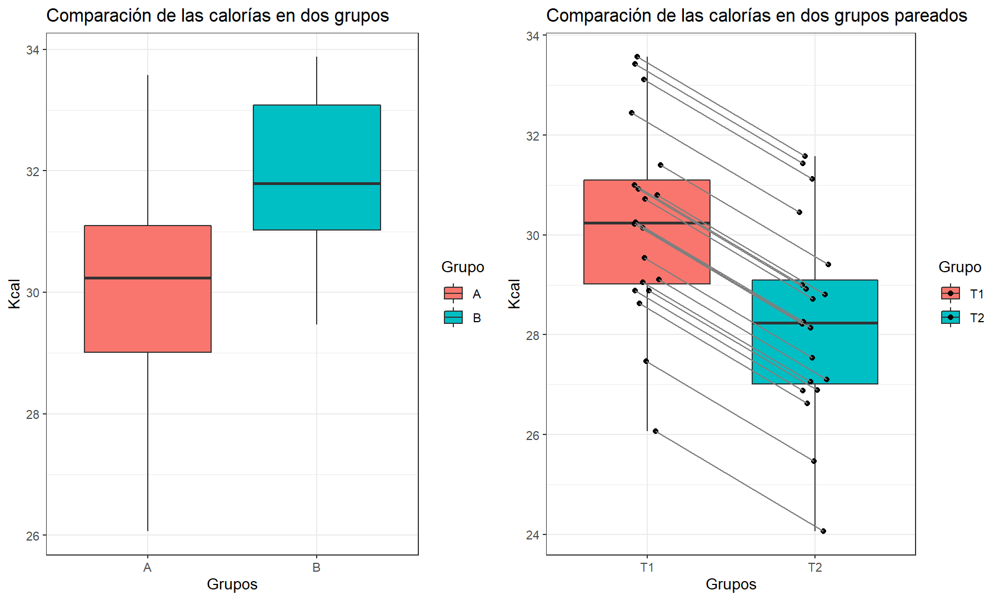
Dada estas situaciones entonces surge la pregunta ¿Existe diferencia significativa entre los dos grupos? Para responder esta peregunta tenemos dos procedimientos para llegar a la respuesta:
- Intervalos de confianza
- Pruebas de hipótesis
IC para la diferencia de proporciones
A menudo se tiene interés en conocer la magnitud de la diferencia entre las proporciones de dos poblaciones. Es posible que se quiera comparar, por ejemplo, entre hombres y mujeres, dos grupos de edades, dos grupos socioeconómicos o dos grupos de diagnóstico con respecto a la proporción que posee alguna caractenstica de interés.
Se tienen \(X_1,\dots,X_n\) y \(Y_1,\dots,Y_n\) dos muestras aleatorias cada una pertenecientes a una distribución binomial \(X\sim bin(n_1,p_1)\) y \(Y\sim bin(n_2,p_2)\). Un estimador puntual insesgado de la diferencia entre dos proporciones de las poblaciones se obtiene al calcular la diferencia de las proporciones de las muestras \(\hat{p_1}-\hat{p_2}\). Tal como se ha visto, cuando \(n_1\) \(n_2\) son de gran tamano y las proporciones de la población no estan muy cerca de \(0\) o de \(1\), es posible aplicar el teorema central del limite y utilizar la teoría de la distribución normal para obtener los intervalos de confianza.
El error estándar de la estimación se calcula mediante la siguiente formula:
\[\Large\hat{\sigma}_{\hat{p_1}-\hat{p_2}}=\sqrt{\frac{\hat{p_1}(1-\hat{p_1})}{n_1}+\frac{\hat{p_2}(1-\hat{p_2})}{n_2}}\]
Entonces un intervalo de confianza al \(100(1-\alpha)\%\) para \(p_1-p_2\) se obtiene de:
\[(\hat{p_1}-\hat{p_2})\,\pm\,Z_{1-\alpha/2}\sqrt{\frac{\hat{p_1}(1-\hat{p_1})}{n_1}+\frac{\hat{p_2}(1-\hat{p_2})}{n_2}}\]
Entonces cuando el intervalo contenga el valor \(0\) significa que los grupos son estadísticamente iguales, eso se debe a: \[p_1 - p_2 = 0 \quad \rightarrow \quad p_1=p_2\]
En un barrio de la ciudad se construirá una canacha para promover el deporte y la actividad física. Antes de la inversión los encargados del proyecto desean saber la opinión de la comunidad acerca del material de la cacha de manera independiente. Los resultados muestran que de los 65 encuestados 29 aprueban la cancha sea de césped, por otra parte, 42 aprueban la cancha sintética de 178 encuestados. ¿Existe diferencia significativa entre el grupo que prefieren la cancha en cesped a los que prefieren la cancha sintética con un nivel de conifianza del 95%?
Si No Total Cesped 29 36 65 Sintética 42 136 178
##
## 2-sample test for equality of proportions without continuity
## correction
##
## data: c(29, 42) out of c(65, 178)
## X-squared = 10.172, df = 1, p-value = 0.001426
## alternative hypothesis: two.sided
## 95 percent confidence interval:
## 0.07420556 0.34619202
## sample estimates:
## prop 1 prop 2
## 0.4461538 0.2359551##
## 2-sample test for equality of proportions with continuity correction
##
## data: c(29, 42) out of c(65, 178)
## X-squared = 9.1812, df = 1, p-value = 0.002445
## alternative hypothesis: two.sided
## 95 percent confidence interval:
## 0.06370426 0.35669332
## sample estimates:
## prop 1 prop 2
## 0.4461538 0.2359551IC para muestras pareadas
Un método que se utiliza con frecuencia para averiguar la eficacia de un tratamiento o procedimiento experimental es aquel que hace uso de observaciones relacionadas que resultan de muestras no independientes.
El objetivo en comparación por parejas es eliminar un máximo numero de fuentes de variación extraña haciendo parejas similares con respecto a tantas variables como sea posible. Las observaciones relacionadas o por pares se pueden obtener de muchas formas. Los mismos individuos pueden ser examinados antes y después de recibir algún tratamiento. Se pueden formar parejas de animales del mismo sexo de una misma camada para asignarles aleatoriamente un tratamiento o un placebo. A los pares de gemelos o hermanos se les puede asignar aleatoriamente que reciban dos tratamientos, de tal forma que los miembros de una sola pareja reciban diferentes tratamientos.
Al comparar dos métodos de análisis, el material que se va a analizar se divide en partes iguales, de modo que una de las partes sea analizada mediante un método y la otra mediante otro.
Un intervalo al \((1-\alpha)\times100\%\) para la diferencia de medias, se calcula con los siguientes procedimentos.
- Ambas poblaciones deben estar normalmente distribuídas.
- Calcule la diferencia entre los dos grupos \(X_d=X_1-X_2\).
- Calcule el promedio de la diferencia \(\bar X_d\).
- Si no tiene el parámetro de variación del grupo \(\sigma^2_d\), puede calcular la varianza muestral de la diferencia entre los grupos \(S_d^2\).
Con estos cálculos el intervalo de confianza para la diferencia cuando la varianza es conocida es:
\[\bar X_d \,\pm\, Z_{1-\alpha/2}\frac{\sigma_d}{\sqrt{n}}\]
Si no se conoce \(\sigma_d\) se puede reemplazar por \(S_d\):
\[\bar X_d \,\pm\, t_{(1-\alpha/2,\,n-1)}\frac{S_d}{\sqrt{n}}\]
Un entrenador de atletas profesionales estudia la eficacia de un método de mejora de los tiempos de carrera. Se selecciona al azar 14 atletas y se registra los tiempos de carrera en 100 mts, luego se somenten al régimen de entrenamiento y se repite la prueba. Los resultados son los siguientes:
id Antes Despues 1 15.20 10.55 2 19.08 12.59 3 20.62 15.87 4 25.02 14.04 5 15.11 16.32 6 17.14 15.11 7 22.66 17.40 8 21.01 16.99 9 17.95 15.80 10 19.44 16.99 11 22.36 15.37 12 19.13 21.36 13 14.52 14.58 14 22.34 17.44 ¿Se puede concluír que el metodo es efectivo con un nivel de significancia del 97%?
Antes <- c(15.20,19.08,20.62,25.02,15.11,17.14,22.66,
21.01,17.95,19.44,22.36,19.13,14.52,22.34)
Despues <- c(10.55,12.59,15.87,14.04,16.32,15.11,17.40,
16.99,15.80,16.99,15.37,21.36,14.58,17.44)
t.test(Despues,Antes,paired = T,conf.level = 0.97)##
## Paired t-test
##
## data: Despues and Antes
## t = -3.9262, df = 13, p-value = 0.001738
## alternative hypothesis: true difference in means is not equal to 0
## 97 percent confidence interval:
## -5.92258 -1.38742
## sample estimates:
## mean of the differences
## -3.655IC para la diferencia de medias
El procedimiento de comparar grupos a través de los medias estimadas, similar a estimar un solo parámetro, requiere de una serie de evaluaciones para seleccionar el método correcto de acuerdo al comportamiento de los datos.
- Verificar que los datos distribuyen normal o no.
- Verificar si los tamaños de cada muestra son suficientemente grandes.
- Verificar si las varianzas de cada muestra son iguales o no.
- Seleccionar el método de estimación.
IC de diferencia de Varianza
Otro paso importante es verificar si las varianzas de ambos grupos son iguales o no, esto es importante porque la intención de la comparación de grupos a partir de la diferencia de promedios solamente debe comparar un factor o grupo que diferencia las muestras. La presencia de variabilidad excesiva en una de las muestras indicaría que existe otra condición no analizada que puede afectar la comparación, sin embargo, es posible controlar este problema estimando una variación conjunta entre los dos grupos.
La comparación de dos varianzas se realiza a través de su razón, \(\sigma_1/\sigma_2\) si las varianzas son iguales entonces la razón será \(1\). Por lo general, las varianzas de las poblaciones son desconocidas y, en consecuencia, toda comparación que haga deberá basarse en las varianzas de las muestras. Basado en el Teorema Central del Límite se puede demostrar que la razón de dos varianzas tiene una distribución F de Snedecor. Entonces un intervalo de confianza para la razón de varianzas está dado por:
\[F_{(\alpha/2,n_1-1,n_2-1)}<\cfrac{S^2_1/\sigma^2_2}{S^2_2/\sigma^2_2}<F_{(1-\alpha/2,n_1-1,n_2-1)}\\\\ F_{(\alpha/2,n_1-1,n_2-1)}<\cfrac{S^2_1}{S^2_2}\times\cfrac{\sigma^2_2}{\sigma^2_1}<F_{(1-\alpha/2,n_1-1,n_2-1)}\\\\ \cfrac{F_{(\alpha/2,n_1-1,n_2-1)}}{S^2_1/S^2_2}<\cfrac{\sigma^2_2}{\sigma^2_1}<\cfrac{F_{(1-\alpha/2,n_1-1,n_2-1)}}{S^2_1/S^2_2}\\\\ \cfrac{S^2_1/S^2_2}{F_{(\alpha/2,n_1-1,n_2-1)}}>\cfrac{\sigma^2_1}{\sigma^2_2}>\cfrac{S^2_1/S^2_2}{F_{(1-\alpha/2,n_1-1,n_2-1)}}\]
Un intervalo al \(100(1-\alpha)\%\) para \(\sigma^2_1/\sigma^2_2\) está dado por:
\[\cfrac{S^2_1/S^2_2}{F_{(1-\alpha/2,n_1-1,n_2-1)}}<\cfrac{\sigma^2_1}{\sigma^2_2}<\cfrac{S^2_1/S^2_2}{F_{(\alpha/2,n_1-1,n_2-1)}}\]

En el primer gráfico se evidencia cómo el parámetro \(d_2\) determina la altura de la densidad cuando el parámetro \(d_1\) está fijo, mientras que en el segundo se ve cómo el parámetro \(d_1\) mueve la distribución en el eje \(x\) de forma positiva cuando el parámetro \(d_2\) está fijo.

Cuando los parámetros de la distribución son iguales se nota que para valores \(<3\) la distribución tiene tendencia exponencial, y aparece de forma notable la varianza con parámetros \(d1=d2\geq4\). Por otra parte, si ambos parámetros son muy grandes, en el límite la distribución se transforma en una distribución degenerada en \(x=1\).
Resumen

Con:
\[SP=\sqrt{\cfrac{(n_1-1)S^2_1+(n_2-1)S^2_2}{n_1+n_2-2}}\]
y
\[\large v= \cfrac{\left(\frac{S^2_1}{n_1}+\frac{S^2_2}{n_2}\right)^2}{\frac{\left(\frac{S^2_1}{n_1}\right)^2}{n_1-1}+\frac{\left(\frac{S^2_2}{n_2}\right)^2}{n_2-1}}\]
Ejercicios Propuesto
Realizar los ejercicios de la sección 6.4 de la lectura recomendada
Ejemplo práctico
La siguiente base de datos contiene información acerca de incautaciones de bebidas alcohólicas fraudulentas y de contrabando en la ciudad de Medellín en un mes, que afectan los recursos para Salud y Educación en el Departamento de Antioquia y de acuerdo a los resultados se toma decisiones para aumentar o disminuir los controles.
La base de datos contiene las variables - TL (Tipo de Licor) - PI (Precio de incautación: se refiere al precio de venta en el establecimiento por unidad) - GAE (Grados de Alcohol en etiqueta) - GAQ (grados de alcohol en prueba química) - CE (Cantidades estandarizadas: número de unidades estandarizadas a 750 ml).
Usando la información de su base de datos responda a las siguientes preguntas.
El precio total de la incautación se calcula como la cantidad estandarizada por el precio de incautación. ¿Se puede afirmar que el precio total promedio de la incautación es superior a $7’500.000?
El ipoconsumo, es el impuesto que deja de percibir el Estado para salud y educación, el cual se calcula como: \(GAQ \times CE \times 400\) (pesos). ¿Se puede afirmar que el ipoconsumo promedio del ron es inferior al ipoconsumo medio del Whisky? ¿Qué decisión se puede tomar frente al control?
El licor incautado se clasifica como “Fraudulento” si los GAE son distintos a los GAQ y como “contrabando” si son iguales. ¿La proporción de licores fraudulentos es superior al 65%? ¿Qué significa éste resultado?
Asumamos normalidad en los datos
Solución usando R
Lo primero es descargar la base de datos en la carpeta que se considere, luego debemos cargar la base de datos en RStudio para realizar los análisis. Antes de comenzar con el análisis necesitamos instalar o cargar las librerías necesarias para el análisis
# Para manipular datos
if(!require(dplyr)) install.packages("dplyr")
# Gráficos con estilo
if(!require(ggplot2)) install.packages("ggplot2")
# Importar/Exportar datos de Excel
if(!require(openxlsx)) install.packages("openxlsx")El siguiente paso es cargar la base de datos, esto lo podemos realizar directamente de RStudio con el siguiente comando:
Revisemos la estructura de los datos, para verificar si fueron cargados correctamente.
## 'data.frame': 300 obs. of 5 variables:
## $ TL : chr "Ron" "Aguardiente" "Ron" "Aguardiente" ...
## $ PI : num 34719 26900 27062 29317 32471 ...
## $ GAE: num 35 29 35 29 38 29 29 38 35 40 ...
## $ GAQ: num 30.2 29 32.2 29 32.6 ...
## $ CE : num 221 253 249 254 267 ...El primer punto nos piden calcular el precio total de incautación, y se pregunta si el promedio de esa nueva variable es superior a 7.5 millones. También hay que seleccionar el estadístico de prueba más indicado.
Entonces, siguiendo el árbol de decisión tenemos que los datos se distribuyen normal y no conocemos los parámetros poblacionales, por lo tanto el estadístico de prueba está basado en la t-student.
##
## One Sample t-test
##
## data: Licores$PT
## t = 102.67, df = 299, p-value < 2.2e-16
## alternative hypothesis: true mean is not equal to 0
## 95 percent confidence interval:
## 7325868 7612193
## sample estimates:
## mean of x
## 7469031Como el intervalo de confianza está compuesto por \((7'325.868;\,7'612.193)\) y contiene el valor teórico de los 7.5 millones, existe evidencia muestral suficiente de que el promedio del precio de incautaciones mesual es de $7’500.000, esto implica anualmente se esperaría que alrededor de 90 millones de pesos deje de circular ilegalmente gracias a lo no pago de impuestos o adulteración de licores.
En la siguiente pregunta se pide calcular el ipoconsumo de acuerdo a una formulación, y luego comparar si el impuesto de los licores de tipo Ron son menores a los de Whisky basado en los promedios.
De acuerdo al árbol de decisión tenemos que hacer los siguientes pasos:
- Calcular el ipoconsumo
- Separar la base de datos en Ron y Whisky
- Comprobar la igualdad de varianzas de los grupos
- Escoger el mejor estadístico de prueba y realizar el análisis.
- Concluir
Los primeros dos pasos son sencillos:
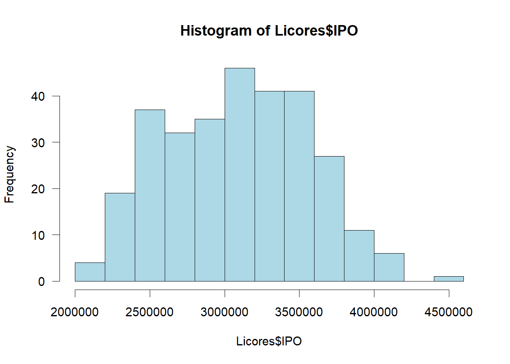
SoloRW <- Licores %>%
filter(TL %in% c("Ron","Whisky")) %>%
droplevels
SoloRW %>% group_by(TL) %>%
summarise(n=length(IPO),
media=mean(IPO),
desv=sd(IPO))## # A tibble: 2 x 4
## TL n media desv
## <fct> <int> <dbl> <dbl>
## 1 Ron 52 3185673. 270971.
## 2 Whisky 27 3591694. 317110.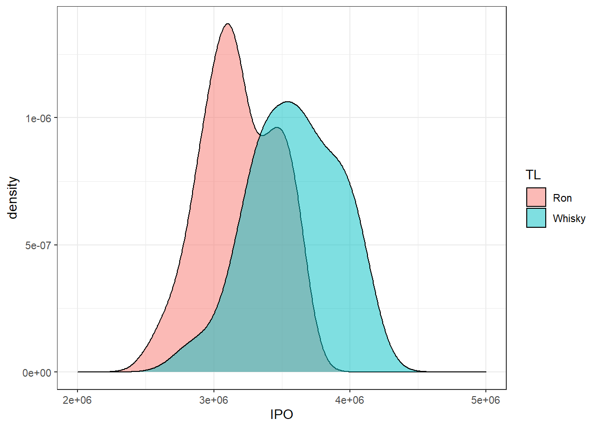
Como ambas muestras distribuyen normal, es necesario verificar si existe igualdad en sus varianzas, esto se comprueba con la función var.test.
##
## F test to compare two variances
##
## data: IPO by TL
## F = 0.73017, num df = 51, denom df = 26, p-value = 0.3333
## alternative hypothesis: true ratio of variances is not equal to 1
## 95 percent confidence interval:
## 0.3562148 1.3878542
## sample estimates:
## ratio of variances
## 0.730172Entonces, como los datos son normales y tienen varianzas iguales, de acuerdo con el árbol de decisión el mejor estadístico de prueba está basado en la t-student y es necesario estimar la varianza conjunta, no obstante, el software lo hace:
##
## Two Sample t-test
##
## data: IPO[TL == "Ron"] and IPO[TL == "Whisky"]
## t = -5.9561, df = 77, p-value = 7.258e-08
## alternative hypothesis: true difference in means is not equal to 0
## 95 percent confidence interval:
## -541763.2 -270279.6
## sample estimates:
## mean of x mean of y
## 3185673 3591694En conclusión, el ipoconsumo del ron es menor al del whisky ya que el IC al 95% no contiene el cero. Entonces la cantidad de impuestos que deja de percibir el departamento tiene mayor aporte en el Whisky, sin embargo, las cantidades de Ron son casi el doble que las de Whisky lo que sugiere que este licor es preferido para la adulteración. Los controles se deben aumentar para incautar más Ron y establecer una estrategia para que no aumente la adulteración del Whisky que es la que más afecta los recursos para salud.
El tercer punto nos piden calcular una nueva variable, si \(GAQ=GAE\) el licor se clasifica como contrabando en caso contrario se llamará fraudulento.
Luego preguntan si la proporción de licores Fraudulentos es superior al 65%.
## TipoLicor
## Contrabando Fraudulento
## 83 217Como en R los factores se organizan alfabéticamente, entonces debemos cambiar la hipótesis hacia los licores de contrabando, entoces se evaluará si la proporción de licores de contrabando es del 35%.
##
## 1-sample proportions test without continuity correction
##
## data: table(TipoLicor), null probability 0.5
## X-squared = 59.853, df = 1, p-value = 1.022e-14
## alternative hypothesis: true p is not equal to 0.5
## 95 percent confidence interval:
## 0.2291106 0.3298699
## sample estimates:
## p
## 0.2766667Como el intervalo está dado por \((22.91\%;\,32.99\%)\) y el valor teórico está por fuera del rango, por lo tanto existe evidencia muestral para afirmar que la proporción de licores Fraudulentos es mayor del 65%. Por lo tanto, las rentas ilegales de licores están basadas en mayor medida de la adulteración, el impacto para la salud pública es muy grave, pues los efectos nocivos de los licores que no son correctamente destilados aumenta los riesgos clínicos como la ceguera, el cáncer de órganos digestivos o la muerte.
Pruebas de Hipótesis
Una hipótesis Estadística es una afirmación que se hace con respecto a una o algunas características desconocidas de una población de interés o acerca de la misma población.
Una afirmación hecha acerca de una población o de una de sus características de interés, tiene sentido solo si es evaluada con base en la información obtenida a partir de una muestra aleatoria de dicha población.
Como dicha afirmación puede ser o no cierta, dos hipótesis (antagónicas) pueden ser planteadas:
\[H_0:\text{La hipótesis es cierta vs}\quad H_a:\text{La hipótesis es falsa}\] \(H_0\) y \(H_a\) se conocen como hipótesis nula y alternativa respectivamente. \(H_0\) se rechaza, solo si la evidencia muestral apoya fuertemente esa decisión. En otro caso diremos que la evidencia muestral no es suficiente para rechazar \(H_0\) y se asume \(H_a\) como cierta. El proceso por medio del cual escogemos una de las dos hipótesis es llamado Prueba de Hipótesis.
Para rechazar o aceptar una hipótesis necesitamos a parir de la muestra aleatoria construir un estadístico de prueba tal que, comparado con valor crítico calcula con un nivel de significancia, otorgue la suficiente evidencia para sacar una conclusión. El contraste de la hipótesis nula determina las posibles regiones de rechazo donde será comparado el estadístico de prueba.
\[1:\,\{x\,|\,x > |k|\}\\2:\,\{x\,|\,x < -k\}\\3:\,\{x\,|\,x > k\}\]
Así toda prueba de hipótesis consta de:
- Hipótesis nula \(H_0\).
- Hipótesis alternativa \(H_a\).
- Estadístico de prueba.
- Región de rechazo.
En general, sea un parámetro de interés desconocido \(\theta\) y un valor particular \(\theta_0\). Es posible plantear una de tres hipótesis alternativas:
\[\begin{align*} H_0: \theta=\theta_0 \quad \text{vs} \quad H_a: \begin{cases} \theta &<\theta_0 \\ \theta &> \theta_0 \\ \theta &\neq \theta_0 \\ \end{cases} \end{align*}\]
Existe un estadístico \(\hat\theta\) estimado a partir de la muestra aleatoria, el cual sirve para contrastar la hipótesis construyendo las posibles regiones de rechazo (de acuerdo a \(H_a\)) con un nivel de significancia \(\alpha\) dado.
\[\{\hat\theta\,|\,\hat\theta > |k|\}\quad \{\hat\theta\,|\,\hat\theta < k\}\quad \{\hat\theta\,|\,\hat\theta > k\}\]
Otra forma de contrastar la hipótesis es calcular el valor mínimo de \(\alpha\), es decir la probabilidad de rechazar la hipótesis nula. A este cálculo se le conoce como el valor-p de la prueba:
\[P(|\hat\theta| > |k|)\quad P(\hat\theta < k)\quad P(\hat\theta > k)\]
La decisión de aceptar o rechazar una hipótesis se basa en una muestra aleatoria \(X_1,X_2,...,X_n\) de la distribución de \(X\), por tanto la decisión podría ser equivocada. Los errores que se pueden cometer son:
Aceptar \(H_0\) siendo falsa.
Rechazar \(H_0\) siendo verdadera.
| Decisión | \(H_0\) es Verdadera | \(H_0\) es Falsa |
|---|---|---|
| Rechazar \(H_0\) | Error Tipo I | Decisión Correcta |
| Aceptar \(H_0\) | Decisión Correcta | Error Tipo II |
Es lógico que se desea minimizar las probabilidades de cometer los errores en la decisión (tipo 1 ó 2), pero esto depende de la m.a \(X_1,X_2,...,X_n\). Sin embargo, si P(cometer error tipo 1)=0, entonces P(cometer error tipo 2)=1.
\[\alpha = P(\text{Error Tipo I})\] \[\beta = P(\text{Error Tipo II})\] \(\alpha\) es llamado nivel de significancia de la prueba o tamaño de la región crítica y \(1-\beta\) es la potencia de la prueba.
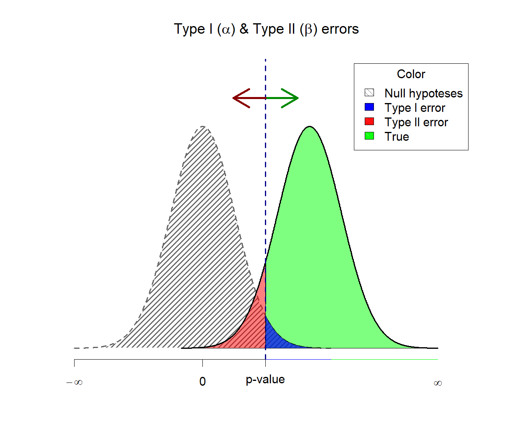
PH para la proporción
Suponga que \(X\) es una v.a tal que \(X \sim bin(n , p)\), con \(p\) desconocida. Sea \(p_0\) un valor de interés para \(p\). Tres hipótesis pueden ser planteadas acerca de \(p\).
\[\begin{align*} H_0: p=p_0 \quad \text{vs} \quad H_a: \begin{cases} p &<p_0 \\ p &> p_0 \\ p &\neq p_0 \\ \end{cases} \end{align*}\]
Por el TCL sabemos que si \(n\) es grande entonces:
\[\cfrac{\hat{p}-p_0}{\sqrt{\frac{p_0(1-p_0)}{n}}} \stackrel{aprox}{\underset{n \rightarrow \infty}{\widetilde{\quad\quad}}} N(0,1)\]
Entonces el estadístico de prueba a ser usado es:
\[Z_c=\cfrac{\hat{p}-p_0}{\sqrt{\frac{p_0(1-p_0)}{n}}}\]
Para un \(\alpha\) dado, la Región Crítica es de la forma:
\[\begin{align*} R.C: \begin{cases} Z_c &\rightarrow\, Z_c <z_\alpha \\ Z_c &\rightarrow\, Z_c >z_{1-\alpha} \\ Z_c &\rightarrow\, |Z_c| >z_{1-\alpha/2} \\ \end{cases} \qquad V_p: \begin{cases} P(Z < Z_c) \\ P(Z > Z_c) \\ P(|Z| > |Z_c|) \\ \end{cases} \end{align*}\]
En una muestra de 85 recién nacidos, 10 presentaron riesgo de desnutrición. ¿Cuál es la proporción real de recién nacidos con riesgo de desnutrición con una confianza del 95%? Las secretaría de sañud sabe que si el porcentaje de recién nacidos en riesgo de desnutrición supera el 10% deberá generar una alerta al Ministerio de Saludo para hacer un plan de contingencia. Con un nivel de significancia del 5% ¿es necesario generar la alerta?
Tenemos las siguientes hipótesis \[H_0: p=0.1 \quad\text{vs}\quad H_a: p>0.1\].
En R se puede hacer fácilmente las pruebas de hipótesis para la proporción, ya sea a partir de un conjunto de datos, una tabla/matriz o con la proporción directa. La función prop.test hace los cálculos necesarios para las pruebas de hipótesis incluyendo el intervalo de confianza, no obstante, el estadístico de prueba que utiliza está basado en la distribución \(\chi^2\) y los intervalos de confianza son estimados a través del método Wilson, adicionalmente tiene la opción de hacer el cálculo a partir de la corrección de Yates para tamaños de muestra pequeños.
##
## 1-sample proportions test without continuity correction
##
## data: 10 out of 85, null probability 0.1
## X-squared = 0.29412, df = 1, p-value = 0.2938
## alternative hypothesis: true p is greater than 0.1
## 95 percent confidence interval:
## 0.0716376 1.0000000
## sample estimates:
## p
## 0.1176471##
## 1-sample proportions test with continuity correction
##
## data: 10 out of 85, null probability 0.1
## X-squared = 0.13072, df = 1, p-value = 0.3588
## alternative hypothesis: true p is greater than 0.1
## 95 percent confidence interval:
## 0.06712105 1.00000000
## sample estimates:
## p
## 0.1176471Como el valor-p \(0.2938 > 0.05\), entonces no existe suficiente evidencia muestral que soporte la creación de la alerta al Ministerio de Salud, por lo tanto no se rechaza \(H_0\)
Gracias al impacto de las redes sociales y la desinformación de influencers que se declaran expertos en nutrición, calidad de vida y salud, se piensa que la cantidad de bebés que no reciben leche materna ha disminuído significativamente, principalmente en los estratos Altos. Se sabe que la prevalencia de lactancia materna en esta población hace 5 años es del 75%. Neonatólogos del San Vicente realizaron una investigación en 254 bebés, de los cuales 171 reciben lactancia materna. Con un nivel de confianza del 95% ¿La hipótesis de los neonatólogos es cierta?
Tenemos las siguientes hipótesis \[H_0: p=0.75 \quad\text{vs}\quad H_a: p<0.75\]
##
## 1-sample proportions test without continuity correction
##
## data: 171 out of 254, null probability 0.75
## X-squared = 7.9843, df = 1, p-value = 0.002359
## alternative hypothesis: true p is less than 0.75
## 95 percent confidence interval:
## 0.0000000 0.7195891
## sample estimates:
## p
## 0.6732283Como el valor-p \(0.002359 < 0.05\), entonces se reachaza la hipótesis nula \(H_0\), por lo tanto, existe suficiente evidencia muestral que soporta la disminución estadísticamente significativa de la lactancia materna.
PH para la media (población no Normal)
Sea \(X_1,\dots,X_n\) una muestra aleatoria de una población con media \(\mu\) y varianza \(\sigma^2\) si se tienen una muestra grande, entonces para un valor \(\mu_0\) de interés para \(\mu\) se pueden plantear uno de los siguientes contrastes de hipótesis.
\[\begin{align*} H_0: \mu=\mu_0 \quad \text{vs} \quad H_a: \begin{cases} \mu &<\mu_0 \\ \mu &> \mu \\ \mu &\neq \mu_0 \\ \end{cases} \end{align*}\]
El Estadístico de Prueba está dado por:
\[Zc=\cfrac{\bar{X}-\mu_0}{\frac{\sigma}{\sqrt{n}}}\]
Si \(\sigma^2\) es desconocida se puede reemplazar por \(S^2\). Para un \(\alpha\) dado, la Región Crítica es de la forma:
\[\begin{align*} R.C: \begin{cases} Z_c &\rightarrow\, Z_c <z_\alpha \\ Z_c &\rightarrow\, Z_c >z_{1-\alpha} \\ Z_c &\rightarrow\, |Z_c| >z_{1-\alpha/2} \\ \end{cases} \qquad V_p: \begin{cases} P(Z < Z_c) \\ P(Z > Z_c) \\ P(|Z| > |Z_c|) \\ \end{cases} \end{align*}\]
Una Nutricionista de una clínica es la encargada de los planes de ganancia de peso en embarazadas. De acuerdo a los parámetros se sabe que la variación de la ganancia de peso al final de la gestación es de 5 kilos. Se tiene la hipótesis que en los últimos años las gestantes están ganando más de lo recomendado y por lo tanto nacen bebés macrosómicos. Se escogen al azar 45 embarazadas adultas con IMC normal y se registra sus ganancias de peso al final de la gestación y la ganancia promedio resultó en 17.3 kg. Con un nivel de significancia del 5% ¿La hipótesis es verdadera?
De a cuerdo con el Instituto de Medicina y Consejo Nacional de Investigación, la ganancia de peso máxima para gestantes en normo peso es de 16 kilos, entonces las pruebas de hipótesis son: \[H_0: \mu=16 \quad\text{vs}\quad H_a: \mu>16\] Del enunciado tenemos que \(E[X_i]=17.3\) y como \(\sigma=5\), así el estadístico de prueba está dado por: \[Z_c=\cfrac{\bar{X}-16}{\frac{5}{\sqrt{45}}}=\cfrac{17.3-16}{\frac{5}{\sqrt{45}}}=1.744133\] Como \(\alpha=0.05\) se tiene que \(Z_{0.95}=1.645\), entonces la región de rechazo es de la forma: \[RC=\{Z_c\,|\,Z_c>Z_{0.95}\}=\{Z_c\,|\,1.744133>1.645\}\] Y en términos del valor-p se calcula: \[P(Z>Z_c)=P(Z>1.744133)=1-P(Z<1.744133)=0.04056795\] Como \(Z_c>1.645\) o \(0.0406<0.05\) entonces se rechaza \(H_0\), por lo tanto existe evidencia muestral suficiente que en los últimos años las gestantes están ganando más de lo recomendado con un nivel de significancia del 5%.
En procesos de investigación no es común hacer procesos de muestreo o experimentación, que involucren una gran cantidad de datos, y para realizar pruebas de hipótesis en estas circunstancias es necesario comprobar si los datos provienen de una distribución normal o no.
Pruebas de Normalidad
Si el interés es realizar inferencias sobre la diferencia promedio de dos grupos entonces es necesario verificar que las muestras aleatorias de ambos grupos distribuyan apróximadamente normal. Este procedimiento se realiza con una prueba de hipótesis llamada prueba de bondad de ajuste en este caso para la normal.
\[H_0:\text{los datos SI destribuyen }N(\mu,\sigma^2)\\ \text{vs}\\ H_0:\text{los datos NO destribuyen }N(\mu,\sigma^2)\\\]
Para determinar si un conjunto de datos tiene una distribución conocida, se pueden realizar análisis exploratorios con algunos gráficos que ayudan a apreciar de manera aproximada cómo podrían distribuir los datos.
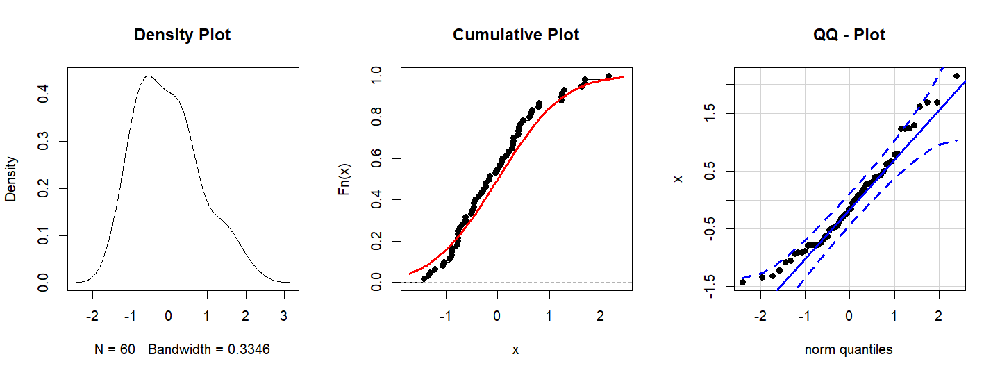
Estos tres gráficos nos ayudarán para explorar el comportamiento de los datos y se pueden combinar con los gráficos de las distribuciones teóricas para evaluar qué tanto se parecen.
El primer gráfico se llama Gráfico de Densidad, muestra cómo es la distribución empírica de probabilidad, a diferencia del Histograma es una buena aproximación de las distribuciones continuas.
El segundo gráfico se llama Gráfico Densidad Acumulada Empírica, este gráfico es muy útil cuando se compara con La densidad acumulada de las distribuciones teóricas. Además, el gráfico muestra el salto de cada muestra en la función de densidad acumulada empírica.
El tercer gráfico se llama Gráfico de Comparación de Cuantiles, contrasta las muestras con los cuantiles de la distribución teórica. La ventaja de este gráfico es que dibuja una recta en la cual se espera que el conjunto de datos se ajuste, además dibuja bandas de confianza para mostrar hasta dónde se puede considerar que los puntos se ajustan a la recta.
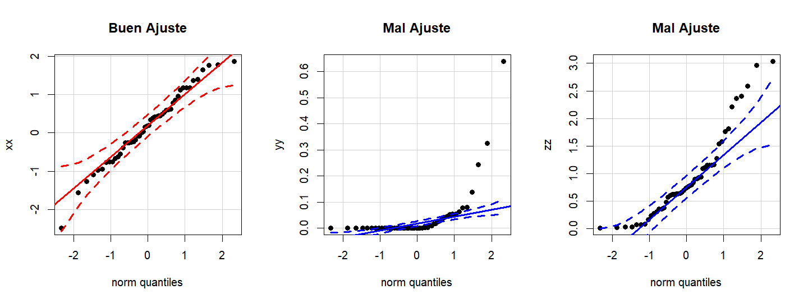
La idea de este gráfico es que los puntos estén muy cercanos a la recta y entre los límites de confianza. Hay que tener cuidado en los extremos de las muestras, ya que algunos puntos pueden salir de las bandas pero esto no significa que no tengan la distribución que se está evaluando; si la mayoría de los puntos están ajustados a la recta y son muy pocos datos en los extremos que salen de las bandas, se puede considerar un buen ajuste.
Existen muchas pruebas de bondad de ajuste para la normalidad que incluso están disponibles en R y otros paquetes (nortest), no obstante, las más utilizadas y referenciadas en la literatua son:
- Test Kolmogorov-Smirnoff (
ks.test()) - Test Lilliefors (
nortest::lillie.test()) - Test Anderson Darling (
nortest::ad.test()) - Test Cramer-Von Mises (
nortest::cvm.test()) - Test Shapiro-Francia (
nortest::sf.test()) - Test Shapiro-Wilks (
shapiro.test())
Un docente desea comparar las notas promedio de sus estudiantes con respecto a las del grupo del semestre pasado, con el ánimo de evaluar la implementación de una metodología más dinámica. Antes de hacer la comparación desea saber si las notas del curso actual distribuyen o no normal. Las siguientes son las calificaciones:
3.2 4.3 4.6 4.6 3.8 2.8 4.5 4.2 3.9 3.9 3.3 3.5 4.5 4.0 3.5 4.0 4.1 3.5 3.2 3.7 4.2 3.2 3.9 5.3 4.9
require(nortest) # Para los test de normalidad
require(car) # Para el QQ-Plot
x <- c(3.2,4.3,4.6,4.6,3.8,2.8,4.5,4.2,3.9,3.9,
3.3,3.5,4.5,4.0,3.5,4.0,4.1,3.5,3.2,3.7,
4.2,3.2,3.9,5.3,4.9)
length(x)## [1] 25par(mfrow=c(1,3))
plot(density(x),main="Density Plot")
plot(ecdf(x),main="Cumulative Plot",cex=1)
curve(pnorm(x),col=2,lwd=2,add=T)
qqPlot(x,main = "QQ - Plot",pch=19,id=F,cex=1)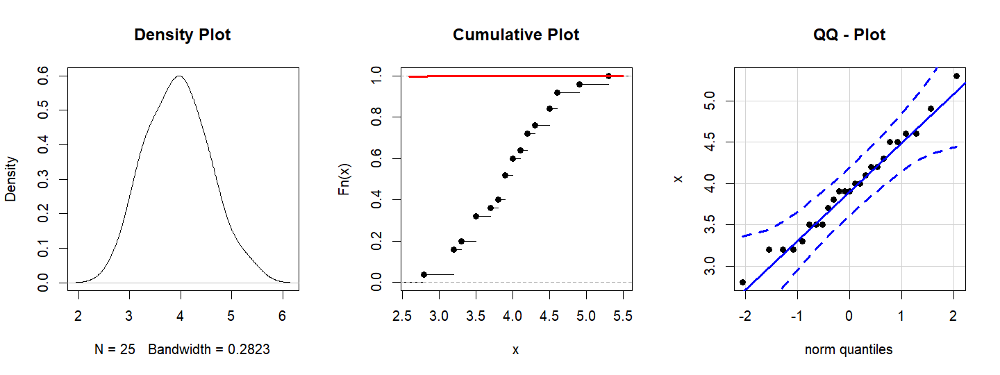
##
## One-sample Kolmogorov-Smirnov test
##
## data: x
## D = 0.091112, p-value = 0.9856
## alternative hypothesis: two-sided##
## Shapiro-Wilk normality test
##
## data: x
## W = 0.98363, p-value = 0.9463##
## Anderson-Darling normality test
##
## data: x
## A = 0.18424, p-value = 0.8987##
## Lilliefors (Kolmogorov-Smirnov) normality test
##
## data: x
## D = 0.091112, p-value = 0.8552##
## Cramer-von Mises normality test
##
## data: x
## W = 0.025473, p-value = 0.8968##
## Shapiro-Francia normality test
##
## data: x
## W = 0.9836, p-value = 0.8915PH para la media (población Normal)
Las pruebas de hipótesis para la media basadas en poblaciones normales asume que la muestra aleatoria \(X_1,\dots,X_n\) proviene de una \(N(\mu,\sigma^2)\) con ambos parámetros desconocidos, sabemos por el teorema central del límite que:
\[\cfrac{\bar{X}-\mu}{\frac{S}{\sqrt{n}}} \sim t_{n-1}\]
Así, si \(\mu_0\) es un valor particular de \(\mu\), se pueden plantear una de las siguientes tres hipótesis:
\[\begin{align*} H_0: \mu=\mu_0 \quad \text{vs} \quad H_a: \begin{cases} \mu &<\mu_0 \\ \mu &> \mu \\ \mu &\neq \mu_0 \\ \end{cases} \end{align*}\]
El Estadístico de Prueba está dado por:
\[Tc=\cfrac{\bar{X}-\mu_0}{\frac{S}{\sqrt{n}}}\]
Para un \(\alpha\) dado, la Región Crítica es de la forma:
\[\begin{align*} R.C: \begin{cases} T_c &\rightarrow\, T_c <t_{(\alpha,\,n-1)} \\ T_c &\rightarrow\, T_c >t_{(1-\alpha,\,n-1)} \\ T_c &\rightarrow\, |T_c| >t_{(1-\alpha/2,\,n-1)} \\ \end{cases} \qquad V_p: \begin{cases} P(t_{n-1} < T_c) \\ P(t_{n-1} > T_c) \\ P(|t_{n-1}| > |T_c|) \\ \end{cases} \end{align*}\]
Se sabe que la fuerza prensil en adultos mayores está asociada con riesgos cardiovasculares, y de la literatura se supone que los valores menores a 16 kgf en esta población infiere riesgos a la salud. Se toma una muestra aleatoria de 16 adultos mayores y se obtienen las fuerzas de prensión para la mano débil. Con un nivel de siginificancia del 3% ¿Esta población estaría en riesgo?
13.86 13.31 18.74 17.36 17.06 15.23 15.40 14.43 13.86 13.31 11.31 14.11 18.44 15.23 15.40 15.70 10.95 16.31 11.31 14.11 17.06 16.67 14.06 15.70 10.95
Las pruebas de hipótesis son: \[H_0: \mu=16 \quad\text{vs}\quad H_a: \mu<16\]
fuerza <- c(13.86, 15.23, 11.31, 15.7, 17.06,
13.31, 15.4, 14.11, 10.95, 16.67,
18.74, 14.43, 18.44, 16.31, 14.06, 17.36)
# Evaluar normalidad
shapiro.test(fuerza)##
## Shapiro-Wilk normality test
##
## data: fuerza
## W = 0.96813, p-value = 0.8074##
## One Sample t-test
##
## data: fuerza
## t = -1.446, df = 15, p-value = 0.08438
## alternative hypothesis: true mean is less than 16
## 97 percent confidence interval:
## -Inf 16.3321
## sample estimates:
## mean of x
## 15.18375Como el valor-p \(0.08438\nless0.03\) entonces no se rechaza \(H_0\), por lo tanto no existe evidencia muestral suficiente para suponer que la población tienen riegos cardiovasculares basados en la fuerza prensil con un nivel de significancia del 3%.
Resumen


La asociación de usuarios (ASU) sospecha que las gasolineras no sirven la cantidad pactada. Por ley, se acepta que el dispensador tenga un error \(\sigma = 10\text{ ml}\) por cada litro que expende. Se realizó una muestra al azar de 100 pedidos de 1 litro, la media observada ha sido 995 ml. Con un nivel de significancia del 5% ¿Las gasolineras sirven la cantidad pactada?
El tiempo utilizado en la atención al paciente en una EPS sigue una distribución normal. La directriz de la junta directiva estableció que el tiempo “óptimo” de atención debe ser menos de 30 minutos. Se piensa que los médicos están tomando más tiempo en la atención de los pacientes, para conocer el tiempo medio empleado en este servicio, se han recogido 20 observaciones que han tardado, en minutos un pormedio de 32.3 y una desviación estándar de 2.3. Con un nivel de significancia del 3% ¿La EPS está incumpliendo los tiempos de atención establecidos?.
Una empresa turística se prepara para las vacaciones de verano, la alcaldía ha prometido una exención de impuestos del 20% para aquellos que hayan declarado ganancias del año pasado superiores a \(\$675\). Para poder ajustar el presupuesto de inversión se toma de referencia la evaluación de ganancias del años pasado, en el cual atendieron 154 turistas con un gasto promedio de \(\$678\) y una desviación de \(\$45\). Con un nivel de signficancia del 5% ¿El presupuesto puede contemplar la exención del 20% en los impuestos?.
En un equipo de fútbol entre el cuerpo médico y técnico decidieron que el VO2max es el indicador para mantener el alto rendimiento del equipo, además de la variable más importante para los fichajes próximos y tiene que ser superior a 60 mml/min/kg. A un grupo de 15 jugadores de la cantera se les hicieron las pruebas, y el promedio de VO2max fue de 57.92 mml/min/kg con una desviación de 2.8 mml/min/kg. Asumiendo los datos distribuyen normal y con una confianza del 90%, ¿El grupo de canteranos están en condiciones para subir de categoría?
El equipo olimpico de Taekwondo quiere estimar la velocidad de reacción de sus deportistas para compararlo con los del equipo Brasileño que es de 0.4 segundos. Se realizan pruebas a los 12 miembros del equipo, donde el promedio de velocidad de reacción es de 0.38 segundos con una desviación de 0.03 segundos. Con un nivel de confianza del 95%, ¿la velocidad de reacción de los deportista es mejor que la de los Brasileños? Asuma que los datos distribuyen normalmente.
Realice los ejercicios del apartado 7.2 de la lectura sugerida.
Comparación de grupos
Como vimos en la primera parte existe una relación directa entre los dos procedimientos cuando se habla de inferencia sobre un parámetro, para el caso de la comparación de grupos también existe esta relación entre IC y PH, sin embargo, el procedimiento involucra unos pasos adicionales en el caso de la diferencia de promedios.
PH para diferencia de proporciones
La prueba que se utiliza con mas frecuencia con relación a la diferencia entre las proporciones de dos poblaciones es aquella en la que su diferencia es cero. Sin embargo, es posible probar que dicha diferencia es igual a algún otro valor. Es posible efectuar pruebas tanto unilaterales como bilaterales.
Cuando la hipótesis nula que va a probarse es \(P_1 -P_2= 0\), se supone que las proporciones de las dos poblaciones son iguales. Esto se utiliza como justificación para combinar los resultados de las dos muestras y obtener una estimación ponderada de la proporción común supuesta. Las hipótesis están dadas por:
\[\begin{align*} H_0: p_A-p_B = \delta \quad \text{vs} \quad H_a: \begin{cases} p_A-p_B &< \delta \\ p_A-p_B &> \delta \\ p_A-p_B &\neq \delta \\ \end{cases} \end{align*}\]
El estadístico de prueba está dado por:
\[Z_c=\frac{(\hat p_1 - \hat p_2)-\delta}{\sqrt{\frac{\bar p(1-\bar p)}{n_1}+\frac{\bar p(1-\bar p)}{n_2}}} \sim N(0,1)\]
donde \(\bar p\) es la proporción muestral agrupada:
\[\bar p = \cfrac{x_1 + x_2}{n_1+n_2}\]
Para un \(\alpha\) dado, la Región Crítica es de la forma:
\[\begin{align*} R.C: \begin{cases} Z_c &\rightarrow\, Z_c <z_\alpha \\ Z_c &\rightarrow\, Z_c >z_{1-\alpha} \\ Z_c &\rightarrow\, |Z_c| >z_{1-\alpha/2} \\ \end{cases} \qquad V_p: \begin{cases} P(Z < Z_c) \\ P(Z > Z_c) \\ P(|Z| > |Z_c|) \\ \end{cases} \end{align*}\]
En un estudio de cuidados nutricionales en asilos para ancianos, Lan y Justice (1991) encontraron que entre 55 pacientes con hipertensión, 24 tenian una dieta con restricción de sodio. De 149 pacientes sin hipertensión, 36 tenían una dieta sin sodio. ¿Es posible concluir que, en las poblaciones muestreadas, la proporción de pacientes con dieta restringida en sodio es mayor entre pacientes con hipertensión que entre pacientes sin hipertension?
Tenemos las siguientes hipótesis: \[H_0: p_H-p_{\bar H}=0 \quad\text{vs}\quad H_a: p_H-p_{\bar H}>0\] Del enunciado podemos calcular la proporción muestral agrupada: \[\bar p=\frac{24+36}{55+149}=\frac{60}{204}=0.2941176\] Entonces con el estadístico de prueba se puede estimar la región crítica: \[Z_c=\frac{24/55-36/149}{\sqrt{\left(\frac{60}{204}\right)\left(\frac{144}{204}\right)\left(\frac{1}{55}+\frac{1}{149}\right)}}=2.709048\] Si \(\alpha =0.05\) entonces se tiene que \(Z_{0.95}=1.645\) y así la región de rechazo es de la forma: \[RC=\{Z_c\,|\,Z_c>Z_{0.95}\}=\{Z_c\,|\,2.709048>1.645\}\] Y en términos del valor-p se calcula: \[P(Z>Z_c)=P(Z>0.542326)=1-P(Z<2.709048)=0.003373829\] Como \(ZC > 1.645\) o \(0.00337 < 0.05\), entonces existe suficiente evidencia muestral que la proporción con dieta restringida en sodio es mayor entre los pacientes hipertensos que entre los pacientes sin hipertensión, por lo tanto se rechaza \(H_0\).
En R se puede hacer fácilmente las pruebas de hipótesis para la diferencia de proporciones, ya sea a partir de un conjunto de datos, una tabla/matriz o con los datos directas. La función prop.test hace los cálculos necesarios para las pruebas de hipótesis incluyendo el intervalo de confianza, no obstante, el estadístico de prueba que utiliza está basado en la distribución \(\chi^2\) y los intervalos de confianza son estimados a través del método Wilson, adicionalmente tiene la opción de hacer el cálculo a partir de la corrección de Yates para tamaños de muestra pequeños.
##
## 2-sample test for equality of proportions without continuity
## correction
##
## data: c(24, 36) out of c(55, 149)
## X-squared = 7.3389, df = 1, p-value = 0.003374
## alternative hypothesis: greater
## 95 percent confidence interval:
## 0.07055185 1.00000000
## sample estimates:
## prop 1 prop 2
## 0.4363636 0.2416107##
## 2-sample test for equality of proportions with continuity correction
##
## data: c(24, 36) out of c(55, 149)
## X-squared = 6.4309, df = 1, p-value = 0.005608
## alternative hypothesis: greater
## 95 percent confidence interval:
## 0.05810523 1.00000000
## sample estimates:
## prop 1 prop 2
## 0.4363636 0.2416107Pruebas de igualdad de Varianza
Otro paso importante es verificar si las varianzas de ambos grupos son iguales o no, esto es importante porque la intención de la comparación de grupos a partir de la diferencia de promedios solamente debe comparar un factor o grupo que diferencia las muestras. La presencia de variabilidad excesiva en una de las muestras indicaría que existe otra condición no analizada que puede afectar la comparación, sin embargo, es posible controlar este problema estimando una variación conjunta entre los dos grupos.
\[\begin{align*} H_0: \frac{\sigma_A^2}{\sigma_B^2}=1 \quad \text{vs} \quad H_a: \begin{cases} \sigma_A^2/\sigma_B^2 &<1 \\ \sigma_A^2/\sigma_B^2 &>1 \\ \sigma_A^2/\sigma_B^2 &\neq 1 \\ \end{cases} \end{align*}\]
El estadístico de prueba está dado por:
\[F_c=\frac{S_A^2}{S_B^2} \sim F_{(n_A-1,n_B-1)}\]
Para un \(\alpha\) dado, la Región Crítica es de la forma:
\[\begin{align*} R.C: \begin{cases} F_c &\rightarrow\, F_c <\frac{1}{F_{1-\alpha,\,(n_B-1,n_A-1)}} \\ F_c &\rightarrow\, F_c >F_{1-\alpha,\,(n_A-1,n_B-1)} \\ F_c &\rightarrow\, F_c < F_{1-\alpha/2,\,(n_A-1,n_B-1)} \\ \end{cases} \qquad V_p: \begin{cases} P(F_{(n_B-1,n_A-1)} < F_c) \\ P(F_{(n_A-1,n_B-1)} > F_c) \\ P(F_{(n_A-1,n_B-1)} < F_c) \\ \end{cases} \end{align*}\]
Nota
Estos pasos de verificación son necesarios para seleccionar el método estadístico adecuado para realizar la comparación de grupos, ya sea por Intervalos de Confianza o por Purebas de Hipótesis.
Comparación de medias
El objetivo de la comparación es resolver una de las siguientes hipótesis antagónicas:
\[\begin{align*} H_0: \mu_A-\mu_B = \delta \quad \text{vs} \quad H_a: \begin{cases} \mu_A-\mu_B &< \delta \\ \mu_A-\mu_B &> \delta \\ \mu_A-\mu_B &\neq \delta \\ \end{cases} \end{align*}\]
Entonces el estadístico de prueba está condicionado al comportamiento de las muestras aleatorias de cada grupo, entonces es necesario verificar si los datos son normales o no y si las varianzas son iguales o no, cada paso o decisión condiciona a seleccionar el mejor estadístico de prueba. Entonces, para seleccionar la mejor opción para compar grupos basados en la promedio tenemos los siguientes árboles de decisión para IC o para PH.
Resumen


Ejemplo 1
La siguiente base de datos contiene información acerca de incautaciones de bebidas alcohólicas fraudulentas y de contrabando en la ciudad de Medellín en un mes, que afectan los recursos para Salud y Educación en el Departamento de Antioquia y de acuerdo a los resultados se toma decisiones para aumentar o disminuir los controles.
La base de datos contiene las variables - TL (Tipo de Licor) - PI (Precio de incautación: se refiere al precio de venta en el establecimiento por unidad) - GAE (Grados de Alcohol en etiqueta) - GAQ (grados de alcohol en prueba química) - CE (Cantidades estandarizadas: número de unidades estandarizadas a 750 ml).
Usando la información de su base de datos responda a las siguientes preguntas.
El precio total de la incautación se calcula como la cantidad estandarizada por el precio de incautación. ¿Se puede afirmar que el precio total promedio de la incautación es superior a $7’500.000?
El ipoconsumo, es el impuesto que deja de percibir el Estado para salud y educación, el cual se calcula como: \(GAQ \times CE \times 400\) (pesos). ¿Se puede afirmar que el ipoconsumo promedio del ron es inferior al ipoconsumo medio del Whisky? ¿Qué decisión se puede tomar frente al control?
El licor incautado se clasifica como “Fraudulento” si los GAE son distintos a los GAQ y como “contrabando” si son iguales. ¿La proporción de licores fraudulentos es superior al 65%? ¿Qué significa éste resultado?
Solución usando R
Lo primero es descargar la base de datos en la carpeta que se considere, luego debemos cargar la base de datos en RStudio para realizar los análisis. Antes de comenzar con el análisis necesitamos instalar o cargar las librerías necesarias para el análisis
# Para manipular datos
if(!require(dplyr)) install.packages("dplyr")
# Gráficos con estilo
if(!require(ggplot2)) install.packages("ggplot2")
# Pruebas de bondad de ajuste
if(!require(nortest)) install.packages("nortest")
# Gráficos QQ-plot con IC
if(!require(car)) install.packages("car")
# Importar/Exportar datos de Excel
if(!require(openxlsx)) install.packages("openxlsx")El siguiente paso es cargar la base de datos, esto lo podemos realizar directamente de RStudio con el siguiente comando:
Revisemos la estructura de los datos, para verificar si fueron cargados correctamente.
## 'data.frame': 300 obs. of 5 variables:
## $ TL : chr "Ron" "Aguardiente" "Ron" "Aguardiente" ...
## $ PI : num 34719 26900 27062 29317 32471 ...
## $ GAE: num 35 29 35 29 38 29 29 38 35 40 ...
## $ GAQ: num 30.2 29 32.2 29 32.6 ...
## $ CE : num 221 253 249 254 267 ...El primer punto nos piden calcular el precio total de incautación, y se pregunta si el promedio de esa nueva variable es superior a 7.5 millones. Entonces tenemos las hipótesis:
\[H_o: \mu_{pt} = 7'500.000 \qquad H_a:\mu_{pt} > 7'500.000\]
Para seleccionar el estadístico de prueba más indicado, debemos probar si la distribución del precio total de incautación es Normal.
\[H_0:PT \sim N(\mu,\sigma^2) \qquad H_a: PT\not\sim N(\mu,\sigma^2)\]
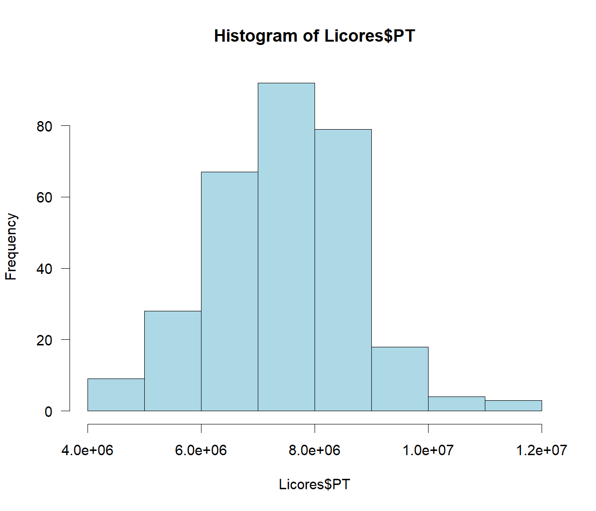
##
## Shapiro-Wilk normality test
##
## data: Licores$PT
## W = 0.99485, p-value = 0.4134##
## Anderson-Darling normality test
##
## data: Licores$PT
## A = 0.25534, p-value = 0.7249##
## Lilliefors (Kolmogorov-Smirnov) normality test
##
## data: Licores$PT
## D = 0.032027, p-value = 0.6393
## [1] 68 65Entonces, siguiendo el árbol de decisión tenemos que los datos se distribuyen normal y no conocemos los parámetros poblacionales, por lo tanto el estadístico de prueba está basado en la t-student.
##
## One Sample t-test
##
## data: Licores$PT
## t = -0.42571, df = 299, p-value = 0.6647
## alternative hypothesis: true mean is greater than 7500000
## 95 percent confidence interval:
## 7348999 Inf
## sample estimates:
## mean of x
## 7469031Como \(\text{valor-p} \, > \, \alpha\) entonces no se rechaza \(H_0\), existe evidencia muestral suficiente de que el promedio del precio de incautaciones mesual es de $7’500.000, esto implica anualmente se esperaría que alrededor de 90 millones de pesos deje de circular ilegalmente gracias a lo no pago de impuestos o adulteración de licores.
En la siguiente pregunta se pide calcular el ipoconsumo de acuerdo a una formulación, y luego comparar si el impuesto de los licores de tipo Ron son menores a los de Whisky basado en los promedios. Entonces tenemos la siguiente hipótesis:
\[H_0: \mu_{Ir} = \mu_{Iw} \qquad H_a:\mu_{Ir} < \mu_{Iw}\]
De acuerdo al árbol de decisión tenemos que hacer los siguientes pasos:
- Calcular el ipoconsumo
- Separar la base de datos en Ron y Whisky
- Probar la normalidad de ambos grupos
- Comprobar la igualdad de varianzas de los grupos
- Escoger el mejor estadístico de prueba y realizar el análisis.
- Concluir
Los primeros dos pasos son sencillos:
Licores <- Licores %>%
mutate(IPO = GAQ*CE*400)
SoloRA <- Licores %>%
filter(TL %in% c("Ron","Whisky")) %>%
droplevels
SoloRA %>% group_by(TL) %>%
summarise(n=length(IPO),
media=mean(IPO),
desv=sd(IPO))## # A tibble: 2 x 4
## TL n media desv
## <fct> <int> <dbl> <dbl>
## 1 Ron 52 3185673. 270971.
## 2 Whisky 27 3591694. 317110.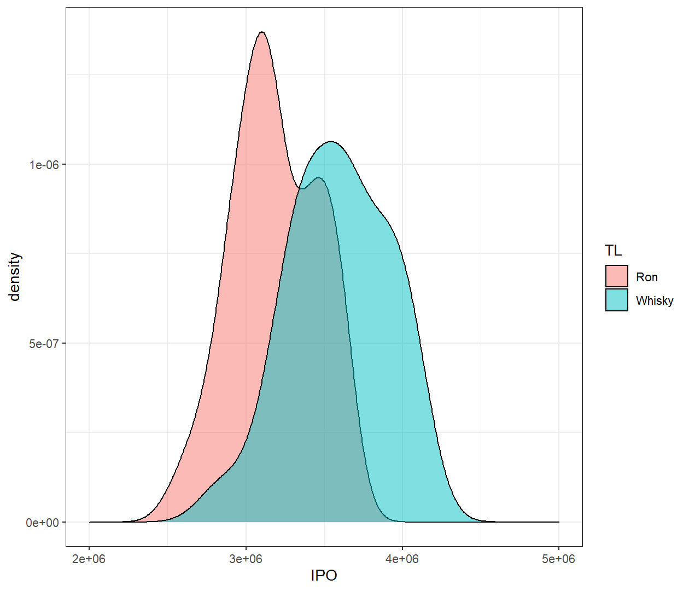
Luego debemos probar la normalidad de los datos, esto lo podemos hacer de dos formas. La primera es separar la base de datos y construir dos nuevas con los grupos de interés, la otra es evaluar al mismo tiempo los valores-p de las pruebas usando dplyr.
# Primer método - Ron
SoloRA %>% filter(TL=="Ron") %>%
dplyr::select(IPO) %>% unlist %>% shapiro.test()##
## Shapiro-Wilk normality test
##
## data: .
## W = 0.96894, p-value = 0.1904##
## Anderson-Darling normality test
##
## data: .
## A = 0.50493, p-value = 0.1943##
## Lilliefors (Kolmogorov-Smirnov) normality test
##
## data: .
## D = 0.095664, p-value = 0.2758# Primer método - Whisky
SoloRA %>% filter(TL=="Whisky") %>%
dplyr::select(IPO) %>% unlist %>% shapiro.test()##
## Shapiro-Wilk normality test
##
## data: .
## W = 0.96678, p-value = 0.5193##
## Anderson-Darling normality test
##
## data: .
## A = 0.26387, p-value = 0.671##
## Lilliefors (Kolmogorov-Smirnov) normality test
##
## data: .
## D = 0.087079, p-value = 0.8639# Segundo método
SoloRA %>% group_by(TL) %>%
summarise(shapiro=shapiro.test(IPO)$p.val,
Ander_Darl=ad.test(IPO)$p.val,
lilliefords=lillie.test(IPO)$p.val)## # A tibble: 2 x 4
## TL shapiro Ander_Darl lilliefords
## <fct> <dbl> <dbl> <dbl>
## 1 Ron 0.190 0.194 0.276
## 2 Whisky 0.519 0.671 0.864par(mfrow=c(1,2))
with(SoloRA %>% filter(TL=="Ron"),
qqPlot(IPO,pch=19,main = "QQ-Plot Ron",id=F,col.lines = 2))
with(SoloRA %>% filter(TL=="Whisky"),
qqPlot(IPO,pch=19,main = "QQ-Plot Whisky",id=F,col.lines = 4))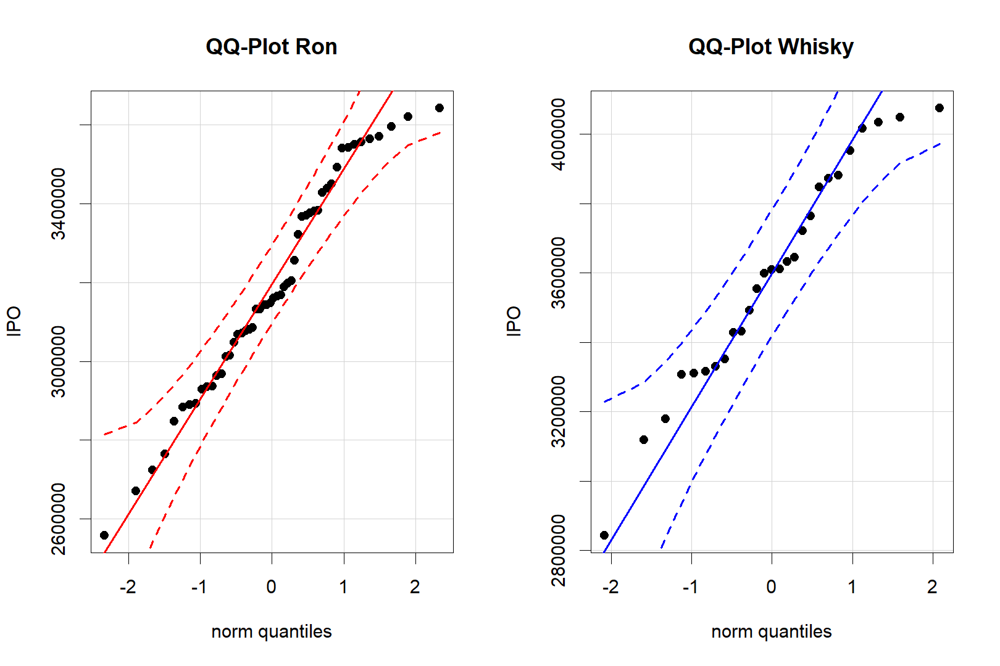
Como ambas muestras distribuyen normal, es necesario verificar si existe igualdad en sus varianzas, esto se comprueba con la función var.test.
##
## F test to compare two variances
##
## data: IPO by TL
## F = 0.73017, num df = 51, denom df = 26, p-value = 0.3333
## alternative hypothesis: true ratio of variances is not equal to 1
## 95 percent confidence interval:
## 0.3562148 1.3878542
## sample estimates:
## ratio of variances
## 0.730172Entonces, como los datos son normales y tienen varianzas iguales, de acuerdo con el árbol de decisión el mejor estadístico de prueba está basado en la t-student y es necesario estimar la varianza conjunta, no obstante, el software lo hace:
##
## Two Sample t-test
##
## data: IPO[TL == "Ron"] and IPO[TL == "Whisky"]
## t = -5.9561, df = 77, p-value = 3.629e-08
## alternative hypothesis: true difference in means is less than 0
## 95 percent confidence interval:
## -Inf -292527.9
## sample estimates:
## mean of x mean of y
## 3185673 3591694En conclusión, el ipoconsumo del ron es menor al del whisky con un nivel de significancia del 5%. Entonces la cantidad de impuestos que deja de percibir el departamento tiene mayor aporte en el Whisky, sin embargo, las cantidades de Ron son casi el doble que las de Whisky lo que sugiere que este licor es preferido para la adulteración. Los controles se deben aumentar para incautar más Ron y establecer una estrategia para que no aumente la adulteración del Whisky que es la que más afecta los recursos para salud.
El tercer punto nos piden calcular una nueva variable, si \(GAQ=GAE\) el licor se clasifica como contrabando en caso contrario se llamará fraudulento.
Luego preguntan si la proporción de licores Fraudulentos es superior al 65%. Entonces las hipótesis son:
\[H_0: p_F = 0.65 \qquad H_a: p_F >0.65\]
## TipoLicor
## Contrabando Fraudulento
## 83 217Como en R los factores se organizan alfabéticamente, entonces debemos cambiar la hipótesis hacia los licores de contrabando, así:
\[H_0: p_C = 0.35 \qquad H_a: p_C < 0.35\]
with(Licores,
prop.test(table(TipoLicor),
p = 0.35,
alternative = "less",
conf.level = 0.95,
correct = F))##
## 1-sample proportions test without continuity correction
##
## data: table(TipoLicor), null probability 0.35
## X-squared = 7.0916, df = 1, p-value = 0.003872
## alternative hypothesis: true p is less than 0.35
## 95 percent confidence interval:
## 0.0000000 0.3210025
## sample estimates:
## p
## 0.2766667Como el valor-p es mucho menor al nivel de significancia, entonces se rechaza \(H_0\) por lo tanto existe evidencia muestral para afirmar que la proporción de licores Fraudulentos es mayor del 65%. Por lo tanto, las rentas ilegales de licores están basadas en mayor medida de la adulteración, el impacto para la salud pública es muy grave, pues los efectos nocivos de los licores que no son correctamente destilados aumenta los riesgos clínicos como la ceguera, el cáncer de órganos digestivos o la muerte.
Ejemplo 2
DATOS DE BAJO PESO DE NACIMIENTO
Estos datos provienen de Hosmer y Lemeshow (2000) Regresión logística aplicada.
El objetivo de este estudio fue identificar los factores de riesgo asociados con el nacimiento de un bebé con bajo peso al nacer (que pesa menos de 2500 gramos). Se recopilaron datos sobre 189 mujeres, 59 de las cuales tenían bebés con bajo peso al nacer y 130 de los cuales tenían bebés con peso normal al nacer. Cuatro variables que se consideraron importantes fueron la edad, el peso del sujeto en su último período menstrual, la raza y el número de visitas al médico durante el primer trimestre del embarazo.
Los datos fueron recolectados en el Baystate Medical Center, Springfield, Massachusetts, durante 1986.
| low | age | lwt | race | smoke | ptl | ht | ui | ftv | bwt | |
|---|---|---|---|---|---|---|---|---|---|---|
| 85 | 0 | 19 | 182 | 2 | 0 | 0 | 0 | 1 | 0 | 2523 |
| 86 | 0 | 33 | 155 | 3 | 0 | 0 | 0 | 0 | 3 | 2551 |
| 87 | 0 | 20 | 105 | 1 | 1 | 0 | 0 | 0 | 1 | 2557 |
| 88 | 0 | 21 | 108 | 1 | 1 | 0 | 0 | 1 | 2 | 2594 |
| 89 | 0 | 18 | 107 | 1 | 1 | 0 | 0 | 1 | 0 | 2600 |
| 91 | 0 | 21 | 124 | 3 | 0 | 0 | 0 | 0 | 0 | 2622 |
| 92 | 0 | 22 | 118 | 1 | 0 | 0 | 0 | 0 | 1 | 2637 |
| 93 | 0 | 17 | 103 | 3 | 0 | 0 | 0 | 0 | 1 | 2637 |
| 94 | 0 | 29 | 123 | 1 | 1 | 0 | 0 | 0 | 1 | 2663 |
| 95 | 0 | 26 | 113 | 1 | 1 | 0 | 0 | 0 | 0 | 2665 |
| 96 | 0 | 19 | 95 | 3 | 0 | 0 | 0 | 0 | 0 | 2722 |
| 97 | 0 | 19 | 150 | 3 | 0 | 0 | 0 | 0 | 1 | 2733 |
| 98 | 0 | 22 | 95 | 3 | 0 | 0 | 1 | 0 | 0 | 2751 |
| 99 | 0 | 30 | 107 | 3 | 0 | 1 | 0 | 1 | 2 | 2750 |
| 100 | 0 | 18 | 100 | 1 | 1 | 0 | 0 | 0 | 0 | 2769 |
La descripción de las variables de esta base de datos están aquí.
De acuerdo con la descripción se organiza el conjunto de datos de mejor forma como sigue.
datos <- with(birthwt, {
race <- factor(race, labels = c("white", "black", "other"))
ptd <- factor(ptl > 0)
ftv <- factor(ftv)
levels(ftv)[-(1:2)] <- "2+"
data.frame(low = factor(low>0),
age, lwt, race, smoke = (smoke > 0),
ptd, ht = (ht > 0), ui = (ui > 0),
ftv,bwt)
})| low | age | lwt | race | smoke | ptd | ht | ui | ftv | bwt |
|---|---|---|---|---|---|---|---|---|---|
| FALSE | 19 | 182 | black | FALSE | FALSE | FALSE | TRUE | 0 | 2523 |
| FALSE | 33 | 155 | other | FALSE | FALSE | FALSE | FALSE | 2+ | 2551 |
| FALSE | 20 | 105 | white | TRUE | FALSE | FALSE | FALSE | 1 | 2557 |
| FALSE | 21 | 108 | white | TRUE | FALSE | FALSE | TRUE | 2+ | 2594 |
| FALSE | 18 | 107 | white | TRUE | FALSE | FALSE | TRUE | 0 | 2600 |
| FALSE | 21 | 124 | other | FALSE | FALSE | FALSE | FALSE | 0 | 2622 |
| FALSE | 22 | 118 | white | FALSE | FALSE | FALSE | FALSE | 1 | 2637 |
| FALSE | 17 | 103 | other | FALSE | FALSE | FALSE | FALSE | 1 | 2637 |
| FALSE | 29 | 123 | white | TRUE | FALSE | FALSE | FALSE | 1 | 2663 |
| FALSE | 26 | 113 | white | TRUE | FALSE | FALSE | FALSE | 0 | 2665 |
| FALSE | 19 | 95 | other | FALSE | FALSE | FALSE | FALSE | 0 | 2722 |
| FALSE | 19 | 150 | other | FALSE | FALSE | FALSE | FALSE | 1 | 2733 |
| FALSE | 22 | 95 | other | FALSE | FALSE | TRUE | FALSE | 0 | 2751 |
| FALSE | 30 | 107 | other | FALSE | TRUE | FALSE | TRUE | 2+ | 2750 |
| FALSE | 18 | 100 | white | TRUE | FALSE | FALSE | FALSE | 0 | 2769 |
Con esta base de datos responda las siguientes preguntas utilizando R con un nivel de significancia del 5%.
- Para las mamás que tuvieron bebés con bajo peso al nacer, ¿existen diferencias en su condición de fumadoras?
## low
## smoke FALSE TRUE
## FALSE 86 29
## TRUE 44 30Como la pregunta está dirigida a las mamás que tuvieron bebés con bajo peso al nacer, entonces hay que mover las columnas de la tabla para conservar la hipótesis.
## low
## smoke TRUE FALSE
## FALSE 29 86
## TRUE 30 44Esta es la tabla con la cual se hará la prueba de diferencia de proporciones, donde se comparará la condición de fumador dado que se tienen bebés en bajo peso.
##
## 2-sample test for equality of proportions without continuity
## correction
##
## data: .
## X-squared = 4.9237, df = 1, p-value = 0.02649
## alternative hypothesis: two.sided
## 95 percent confidence interval:
## -0.29039121 -0.01607177
## sample estimates:
## prop 1 prop 2
## 0.2521739 0.4054054Como el valor-p es menor a 0.05, entonces se rechaza la hipótesis nula, por lo tanto si existen diferencias significativas entre la proporción de mamás que fuman y las que no, dado que tuvieron bebés con bajo peso al nacer.
- Se cree que las mamás que tuvieron más de un parto previo, la edad es menor a 27 años ¿Es cierta esta hipótesis?
datos %>%
ggplot(aes(x=age,fill=ptd))+geom_density(alpha=0.5)+
ggtitle("Comportamiento de la Edad de las mamás dado los partos previos")+
theme_bw()
Para poder resolver la hipótesis es necesario tener encuenta el filtro de las mamás que tuvieron más de un parto previo, que se indica con la variable ptd. Veamos un resúmen de los datos y resolvamos la hipótesis que la distribución de la edad distribuye normal o no.
# Ojo: Se necesita el filtro
datos %>% filter(ptd==T) %>%
summarise(n=length(age),prom=mean(age),
desv=sd(age),
shapiro=shapiro.test(age)$p.val,
Ander_Darl=ad.test(age)$p.val,
lilliefords=lillie.test(age)$p.val)## n prom desv shapiro Ander_Darl lilliefords
## 1 30 24.43333 5.028768 0.5879124 0.4028222 0.1139127En los resultados vemos que tenemos una muestra de tamaño 30, con una media de 24.43 años y una desviación de 5.03 años. Además los test de normalidad utilizados nos ayudan a conculir que la distribución de los datos es normal, comparando los valores-p con el nivel de significancia.
De acuerdo con el árbol de decisión podemos utilizar un estadístico de prueba basado en la t-student, ya que los datos distribuyen normal y NO conocemos la varianza poblacional, para tomar una decisión sobre la hipótesis planteada.
##
## One Sample t-test
##
## data: .
## t = -2.7956, df = 29, p-value = 0.004548
## alternative hypothesis: true mean is less than 27
## 95 percent confidence interval:
## -Inf 25.99334
## sample estimates:
## mean of x
## 24.43333Como el valor-p es menor al nivel de significancia del 5%, entonces se rechaza la hipótesis nula, por lo tanto el promedio de la edad de las mamás con más de un parto previo es menor de 27 años.
- La hipertensión es un indicador asociado al peso, para las mamás hipertensas ¿existe diferencias significativas entre el peso de las blancas y otros grupos étnicos?
datos %>% filter(ht==T,race %in% c("white","other")) %>%
ggplot(aes(y=lwt,x=race,fill=race))+geom_boxplot()
Para poder resolver la hipótesis de diferencia de medias es necesario tener encuenta el filtro de las mamás con hipertensión previa y considerar de la variable race solo las mujeres blancas y de otras étnias. Veamos un resúmen de los datos y resolvamos la hipótesis que la distribución de la edad distribuye normal o no.
datos %>% filter(ht==T,race %in% c("white","other")) %>%
group_by(race) %>%
summarise(n=length(lwt),prom=mean(lwt),desv=sd(lwt),
shapiro=shapiro.test(age)$p.val)## # A tibble: 2 x 5
## race n prom desv shapiro
## <fct> <int> <dbl> <dbl> <dbl>
## 1 white 5 167. 46.1 0.201
## 2 other 4 122. 26.7 0.850Los resultados nos indican que para ambos grupos los pesos distribuyen normal, de acuerdo con el árbol de decisión hay que decidir si las varianzas so iguales o no.
##
## F test to compare two variances
##
## data: lwt by race
## F = 2.9758, num df = 4, denom df = 3, p-value = 0.397
## alternative hypothesis: true ratio of variances is not equal to 1
## 95 percent confidence interval:
## 0.1970574 29.6956898
## sample estimates:
## ratio of variances
## 2.975759Como el valor-p es mucho mayor que el nivel de significancia, entonces no se reachaza la hipótesis nula, por lo tanto se considera que las varianzas de ambos grupos son iguales. Siguiendo con el árbol de decisión usamos el estadístico de prueba de la t-student para igualdad de varianzas.
datos %>% filter(ht==T,race %in% c("white","other")) %>%
with(.,
t.test(lwt[race=="white"],
lwt[race=="other"],
var.equal = T,conf.level = 0.95))##
## Two Sample t-test
##
## data: lwt[race == "white"] and lwt[race == "other"]
## t = 1.7324, df = 7, p-value = 0.1268
## alternative hypothesis: true difference in means is not equal to 0
## 95 percent confidence interval:
## -16.53074 107.13074
## sample estimates:
## mean of x mean of y
## 166.8 121.5Como el valor-p es mayor que el nivel de significancia, entonces no se rechaza la hipótesis nula, por lo tanto no existen diferencias estadísticamente significativas de los pesos entre los dosgrupos étnicos en presencia de hipertensión. Este resultado se explica por al alta variabilidad que existe en ambos grupos y los pocos tamaños de muestra, lo que impacta en los errores estándar.
- Se piensa que las mujeres blancas tienen bebés con pesos más altos que las de otros grupos étnicos ¿Es cierta esta hipótesis?

Para poder resolver la hipótesis de diferencia de medias es necesario tener encuenta el filtro de la étnia de las mamás blancas y de otras étnias, con la variable race. Veamos un resúmen de los datos y resolvamos la hipótesis que la distribución de la edad distribuye normal o no.
datos %>% filter(race %in% c("white","other")) %>% group_by(race) %>%
summarise(n=length(bwt),prom=mean(bwt),desv=sd(bwt),
shapiro=shapiro.test(bwt)$p.val,
Ander_Darl=ad.test(bwt)$p.val,
lilliefords=lillie.test(bwt)$p.val)## # A tibble: 2 x 7
## race n prom desv shapiro Ander_Darl lilliefords
## <fct> <int> <dbl> <dbl> <dbl> <dbl> <dbl>
## 1 white 96 3103. 728. 0.486 0.227 0.0511
## 2 other 67 2805. 722. 0.205 0.241 0.0258## [1] 74 73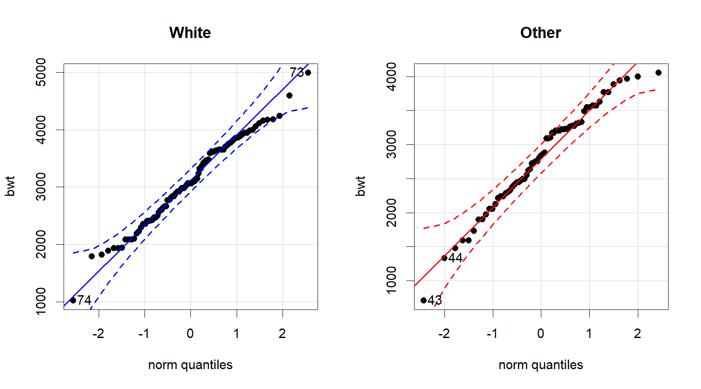
## [1] 43 44De acuerdo con los test de normalidad, el peso al nacer en ambos grupos distribuyen normal, solo el test de Lilliefords presenta problemas, no obstante los QQ-Plots nos muestran que el ajuste es bueno y los test de normalidad más robustos nos apoyan en la decisión. De acuerdo con el árbol de decisión no conocemos las varianzas poblaciones, entonces con las varianzas muestrales es necesario decidir si las varianzas son iguales o no.
##
## F test to compare two variances
##
## data: bwt by race
## F = 1.0158, num df = 95, denom df = 66, p-value = 0.9558
## alternative hypothesis: true ratio of variances is not equal to 1
## 95 percent confidence interval:
## 0.643440 1.574738
## sample estimates:
## ratio of variances
## 1.015825En los resultados del test de varianza vemos que el valor-p es mayor que el nivel de significancia, por lo tanto la varianza del peso al nacer en ambos grupos étnicos es igual. Continuando con el árbol de decisión podemos utilizas el estadístico de prueba basado en la t-student para varianzas iguales, además la hipótesis alternativa considera que los pesos al nacer de las mamás blancas son mayores que los pesos al nacer de los otros grupos étnicos.
with(datos,
t.test(x = bwt[race=="white"],
y = bwt[race=="other"],
var.equal = T,alternative = "greater",
conf.level = 0.95))##
## Two Sample t-test
##
## data: bwt[race == "white"] and bwt[race == "other"]
## t = 2.5751, df = 161, p-value = 0.00546
## alternative hypothesis: true difference in means is greater than 0
## 95 percent confidence interval:
## 106.3502 Inf
## sample estimates:
## mean of x mean of y
## 3102.719 2805.284Como el valor-p es menor que el nivel de significancia, entonces se rechaza la hipótesis nula, por lo tanto existe evidencia muestral suficiente para decir que el peso al nacer de las mamás blancas es mayor que el peso al nacer de las mamás de otras grupos étnicos con una confianza del 95%.
- El hábito de fumar afecta el desarrollo del feto en las mujeres gestantes, ¿existen diferencias en los pesos al nacer dado este hábito?

Para poder resolver la hipótesis de diferencia de medias es necesario tener encuenta el filtro de la condición de fumador con la variable smoke. Veamos un resúmen de los datos y resolvamos la hipótesis que la distribución de la edad distribuye normal o no.
datos %>% group_by(smoke) %>%
summarise(n=length(bwt),prom=mean(bwt),desv=sd(bwt),
shapiro=shapiro.test(bwt)$p.val,
Ander_Darl=ad.test(bwt)$p.val,
lilliefords=lillie.test(bwt)$p.val)## # A tibble: 2 x 7
## smoke n prom desv shapiro Ander_Darl lilliefords
## <lgl> <int> <dbl> <dbl> <dbl> <dbl> <dbl>
## 1 FALSE 115 3056. 753. 0.334 0.202 0.397
## 2 TRUE 74 2772. 660. 0.419 0.567 0.540## [1] 87 86
## [1] 45 46De acuerdo con los test de normalidad, el peso al nacer en ambos grupos distribuyen normal. De acuerdo con el árbol de decisión no conocemos las varianzas poblaciones, entonces con las varianzas muestrales es necesario decidir si las varianzas son iguales o no.
##
## F test to compare two variances
##
## data: bwt by smoke
## F = 1.3019, num df = 114, denom df = 73, p-value = 0.2254
## alternative hypothesis: true ratio of variances is not equal to 1
## 95 percent confidence interval:
## 0.8486407 1.9589574
## sample estimates:
## ratio of variances
## 1.301927En los resultados del test de varianza vemos que el valor-p es mayor que el nivel de significancia, por lo tanto la varianza del peso al nacer en ambos grupos étnicos es igual. Continuando con el árbol de decisión podemos utilizas el estadístico de prueba basado en la t-student para varianzas iguales, además la hipótesis alternativa considera que los pesos al nacer de las mamás fumadoras son diferentes de los pesos al nacer de las no fumadoras.
##
## Two Sample t-test
##
## data: bwt[smoke == T] and bwt[smoke == F]
## t = -2.6529, df = 187, p-value = 0.008667
## alternative hypothesis: true difference in means is not equal to 0
## 95 percent confidence interval:
## -494.79735 -72.75612
## sample estimates:
## mean of x mean of y
## 2771.919 3055.696Como el valor-p es menor que el nivel de significancia, entonces se rechaza la hipótesis nula, por lo tanto existe evidencia muestral suficiente para decir que el peso al nacer de los bebés de las mamás fumadoras es diferente del el peso al nacer de los bebés de las mamás sin este hábito.
- Para las mamás que tuvieron bebés con bajo peso al nacer, ¿son más jóvenes las mamás de otros grupos étnicos en comparación a las mamás blancas?
datos %>% filter(low==T,race %in% c("white","other")) %>%
ggplot(aes(x=race,y=age,fill=race))+geom_boxplot()
Para poder resolver la hipótesis de diferencia de medias es necesario tener encuenta el filtro del bajo peso al nacer y la étnia de las mamás. Veamos un resúmen de los datos y resolvamos la hipótesis que la distribución de la edad distribuye normal o no.
datos %>% filter(low==T,race %in% c("white","other")) %>%
group_by(race) %>%
summarise(n=length(age),prom=mean(age),desv=sd(age),
shapiro=shapiro.test(age)$p.val,
Ander_Darl=ad.test(age)$p.val,
lilliefords=lillie.test(age)$p.val)## # A tibble: 2 x 7
## race n prom desv shapiro Ander_Darl lilliefords
## <fct> <int> <dbl> <dbl> <dbl> <dbl> <dbl>
## 1 white 23 23.0 4.72 0.583 0.592 0.679
## 2 other 25 21.6 4.15 0.109 0.112 0.150par(mfrow=c(1,2))
datos %>% filter(low==T,race=="white") %>%
with(.,qqPlot(age,pch=19,main = "White"))## [1] 3 16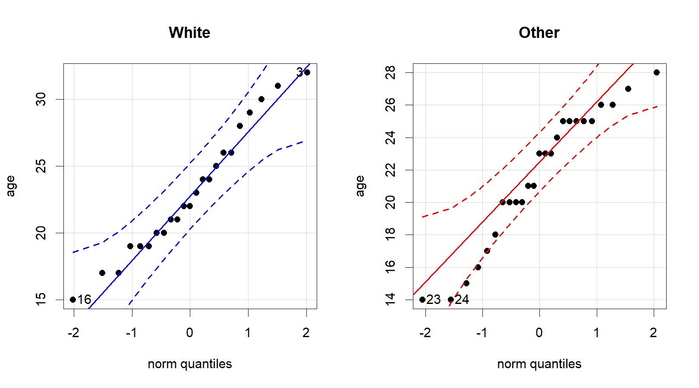
## [1] 23 24De acuerdo con los test de normalidad, las edades en ambos grupos distribuyen normal. De acuerdo con el árbol de decisión no conocemos las varianzas poblaciones, entonces con las varianzas muestrales es necesario decidir si las varianzas son iguales o no.
##
## F test to compare two variances
##
## data: age by race
## F = 1.2944, num df = 22, denom df = 24, p-value = 0.5366
## alternative hypothesis: true ratio of variances is not equal to 1
## 95 percent confidence interval:
## 0.5638052 3.0179943
## sample estimates:
## ratio of variances
## 1.294443En los resultados del test de varianza vemos que el valor-p es mayor que el nivel de significancia, por lo tanto la varianza de las edades de las mamás en ambos grupos étnicos es igual. Continuando con el árbol de decisión podemos utilizas el estadístico de prueba basado en la t-student para varianzas iguales, además la hipótesis alternativa considera que son más jóvenes las mamás de otros grupos étnicos en comparación a las mamás blancas.
datos %>% filter(low==T,race %in% c("white","other")) %>%
with(.,t.test(age[race=="other"],
age[race=="white"],alternative = "l",
var.equal = T,conf.level = 0.95))##
## Two Sample t-test
##
## data: age[race == "other"] and age[race == "white"]
## t = -1.0953, df = 46, p-value = 0.1395
## alternative hypothesis: true difference in means is less than 0
## 95 percent confidence interval:
## -Inf 0.7474548
## sample estimates:
## mean of x mean of y
## 21.64000 23.04348Como el valor-p es mayor que el nivel de significancia, entonces no se rechaza la hipótesis nula, por lo tanto no existe evidencia muestral suficiente para decir que son más jóvenes las mamás de otros grupos étnicos en comparación a las mamás blancas, que tuvieron hijos bajo peso al nacer.
Pruebas No-Paramétricas
Un procedimiento no-paramétrico, es un procedimiento estadístico que tiene algunas propiedades deseables, bajo suposiciones relativamente débiles respecto a las poblaciones de donde son obtenidos los datos, y debe satisfacer al menos uno de los siguientes criterios:
- El método puede ser usado en datos con escala de medida nominal.
- El método puede ser usado en datos con escala de medida ordinal.
- El método puede ser usado en datos con escala de medida de intervalo o razón, donde la función de distribución de la variable aleatoria que produce los datos no esta especificada completamente.
En relación con los métodos paramétricos se tiene:
- Los métodos no-paramétricos requieren de pocos supuestos acerca de las poblaciones de las cuales son obtenidos los datos, en particular, los procedimientos no-paramétricos no hacen el supuesto de normalidad.
- Las técnicas no-paramétricas algunas veces son más fáciles de aplicar.
- Los procedimientos no-paramétricos, por lo general, son más fáciles de entender.
- Los procedimientos no-paramétricos son aplicables en situaciones donde los procedimientos paramétricos no se pueden utilizar, como en el caso de la escala de medida nominal.
- Los procedimientos no-paramétricos son casi tan eficientes como los paramétricos, cuando las poblaciones son normales, pero son mucho más eficientes, cuando las poblaciones no son normales.
Test Binomial exacto
Su interés es el de determinar si la proporción de individuos tienen cierta característica. Cobra relevancia cuando se tienen tamaños de muestra muy grandes y el número de exitos son bajos, si bien puede usarse una prueba de hipótesis para la proporción, el test binomial exacto da resultados más precisos gracias a la computación
\[\begin{align*} H_0: p=p_0 \quad \text{vs} \quad H_a: \begin{cases} p &<p_0 \\ p &>p_0 \\ p &\neq p_0 \\ \end{cases} \end{align*}\]
Un estudio sugiere que en una ciudad están naciendo más hombres que mujeres. Para determinar si es cierto se selecciona una muestra aleatoria de los niños nacidos durante los últimos 2 años y se identifica para cada uno el género. ¿Existen diferencias significativas para un nivel de significancia del 5%?
Hombres Mujeres Total Nacimientos 320 263 583 Las hipótesis son: \[H_0: p = 0.5 \quad vs \quad H_a: p \neq 0.5\]
##
## Exact binomial test
##
## data: c(320, 263)
## number of successes = 320, number of trials = 583, p-value = 0.0203
## alternative hypothesis: true probability of success is not equal to 0.5
## 95 percent confidence interval:
## 0.5074739 0.5897986
## sample estimates:
## probability of success
## 0.5488851##
## Exact binomial test
##
## data: 320 and 583
## number of successes = 320, number of trials = 583, p-value = 0.0203
## alternative hypothesis: true probability of success is not equal to 0.5
## 95 percent confidence interval:
## 0.5074739 0.5897986
## sample estimates:
## probability of success
## 0.5488851Test de McNemar
Los datos consisten de \(n\) observaciones independientes de variables aleatorias bi-variadas \((X_i,\, Y_i)\) con \(i = 1,2,\dots,n\), donde \(X_i\) representa la condición de un sujeto antes de un experimento y \(Y_i\) representa la condición del sujeto después del experimento, la escala de medida de \(X_i\) y \(Y_i\) es nominal con 2 categorías.
Supuestos
- Los pares \((X_i,\, Y_i)\) son mutuamente independientes.
- La escala de medida es nominal, con 2 categorías para todos los \(X_i\) y \(Y_i\).
| Y=0 | Y=1 | |
|---|---|---|
| X=0 | a | b |
| X=1 | c | d |
Las hipótesis son:
\[\begin{align*} H_0: P_{antes} = P_{despues} \quad \text{vs} \quad H_a: \begin{cases} P_{antes} &<P_{despues} \\ P_{antes} &>P_{despues} \\ P_{antes} &\neq P_{despues} \\ \end{cases} \end{align*}\]
Otra alternativa:
\[\begin{align*} H_0: P_{b} = P_{c} \quad \text{vs} \quad H_a: \begin{cases} P_{b} &<P_{c} \\ P_{b} &>P_{c} \\ P_{b} &\neq P_{c} \\ \end{cases} \end{align*}\]
Antes de un debate presidencial por televisión entre 2 candidatos. Se tomó una muestra aleatoria de 100 personas y se les preguntó la preferencia por uno de los candidatos, 84 personas estuvieron a favor del candidato Demócrata y los 16 restantes a favor del Republicano. Después del debate, las mismas 100 personas expresaron sus preferencias de nuevo. De las personas que antes favorecieron al Demócrata, 1/4 parte cambiaron de parecer, y 1/4 parte de las personas que antes favorecieron al Republicano se cambiaron al lado del Demócrata, a cual de los 2 candidatos favoreció el debate, con un nivel de significancia del 5%?
Demócrata Republicano Total Despues Demócrata 63 21 84 Republicano 4 12 16 Total 67 33 100 Las hipótesis son: H0: La pobalción de votantes no altera su decisión después del debate
Ha: Después del debate hay mayor cambio a favor del Republicano que a favor del Demócrata
## [,1] [,2]
## [1,] 63 21
## [2,] 4 12##
## McNemar's Chi-squared test
##
## data: Encuesta
## McNemar's chi-squared = 11.56, df = 1, p-value = 0.0006739##
## McNemar's Chi-squared test with continuity correction
##
## data: Encuesta
## McNemar's chi-squared = 10.24, df = 1, p-value = 0.001374Test Fligner-Killeen
Este test no-paramétrico compara las varianzas de dos grupos basándose en la mediana, también es útil cuando el supuesto de normalidad de ambos conjuntos de datos no se cumple.
\[\begin{align*} H_0: \sigma_A^2=\sigma_B^2 \quad \text{vs} \quad H_a: \begin{cases} \sigma_A^2 &<\sigma_B^2 \\ \sigma_A^2 &>\sigma_B^2 \\ \sigma_A^2 &\neq \sigma_B^2 \\ \end{cases} \end{align*}\]
Un entrenador de corredores de fondo quiere comparar las velocidades de dos grupos de entrenamiento para detectar diferencias significativas. Antes de realizar la prueba de comparación tiene que corroborar si las varianzas de ambos grupos son iguales.
A B 16.12 15.26 13.79 14.67 16.90 14.36 14.93 15.88 15.79 15.54 16.49 15.85 16.95 13.17 16.63 13.03 15.76 14.80 16.92 13.25 16.00 15.98 16.54 15.30 16.40 12.75 15.34 14.81 11.28 15.58 las Hipótesis son: \[H_0: \sigma_A^2=\sigma_B^2 \quad \text{vs} \quad H_a: \sigma_A^2\neq\sigma_B^2\]
A <- c(16.12,13.79,16.9,14.93,15.79,16.49,16.95,16.63,
15.76,16.92,16,16.54,16.4,15.34,11.28)
B <- c(15.26,14.67,14.36,15.88,15.54,15.85,13.17,13.03,
14.8,13.25,15.98,15.3,12.75,14.81,15.58)
shapiro.test(A)##
## Shapiro-Wilk normality test
##
## data: A
## W = 0.75746, p-value = 0.0011##
## Shapiro-Wilk normality test
##
## data: B
## W = 0.88131, p-value = 0.04963datos <- data.frame(Velocidad=c(A,B),Grupo=gl(2,15,labels = c("A","B")))
fligner.test(Velocidad~Grupo,data = datos)##
## Fligner-Killeen test of homogeneity of variances
##
## data: Velocidad by Grupo
## Fligner-Killeen:med chi-squared = 0.17933, df = 1, p-value = 0.6719##
## Fligner-Killeen test of homogeneity of variances
##
## data: datos$Velocidad and datos$Grupo
## Fligner-Killeen:med chi-squared = 0.17933, df = 1, p-value = 0.6719Test U Mann-Whitney
Esta prueba no-paramétrica se utiliza como alternativa del t-test para muestras independientes. Si las dos muestras comparadas proceden de la misma población, al juntar todas las observaciones y ordenarlas de menor a mayor, cabría esperar que las observaciones de una y otra muestra estuviesen intercaladas aleatoriamente. Por lo contrario, si una de las muestras pertenece a una población con valores mayores o menores que la otra población, al ordenar las observaciones, estas tenderán a agruparse de modo que las de una muestra queden por encima de las de la otra.
Para determinar el orden se unen las dos muestras y se utiliza el método de rangos. Sea \(X_1,\dots,X_n\) que denota la muestra aleatoria de tamaño \(n\) de la población 1, y sea \(Y_1,\dots,Y_m\) que denota la muestra aleatoria de tamaño \(m\) de la población 2. Se asignan los rangos \(1\) a \(n + m\) a las observaciones de menor a mayor. \(R(X_i)\) y \(R(Y_j)\) denotan los rangos asignados a \(X_i\) y \(Y_j\). Sea \(N = n+m\), si varios valores de la muestra combinada son iguales (empates), asigne a cada uno el promedio de los rangos.
Supuestos
- Ambas muestras son muestras aleatorias de sus respectivas poblaciones.
- Además de la independencia dentro de cada muestra, las 2 muestras aleatorias son independientes.
- La escala de medida es al menos ordinal o bien se tienen que poder ordenar de menor a mayor.
- No es necesario asumir que las muestras se distribuyen de forma normal o que proceden de poblaciones normales. Pero, para que el test compare medianas, ambas han de tener el mismo tipo de distribución.
- Igualdad de varianza entre grupos (homocedasticidad).
\[\begin{align*} H_0: \tilde X=\tilde Y \quad \text{vs} \quad H_a: \begin{cases} \tilde X &<\tilde Y \\ \tilde X &>\tilde Y \\ \tilde X &\neq \tilde Y \\ \end{cases} \end{align*}\]
Un entrenador de corredores de fondo quiere comparar las velocidades de dos grupos de entrenamiento para detectar diferencias significativas. Como las muestras no distribuyen normal y las varianzas entre los grupos son iguales, entonces para comparar los grupos utilizará un test no-paramétrico. Con un nivel de significancia del 5% ¿Las velocidades del grupo A es mayor que las del grupo B?
A B 16.12 15.26 13.79 14.67 16.90 14.36 14.93 15.88 15.79 15.54 16.49 15.85 16.95 13.17 16.63 13.03 15.76 14.80 16.92 13.25 16.00 15.98 16.54 15.30 16.40 12.75 15.34 14.81 11.28 15.58 las Hipótesis son: \[H_0: \tilde X_A\leq\tilde Y_B \quad \text{vs} \quad H_a: \tilde X_A>\tilde Y_B\]
A <- c(16.12,13.79,16.9,14.93,15.79,16.49,16.95,16.63,
15.76,16.92,16,16.54,16.4,15.34,11.28)
B <- c(15.26,14.67,14.36,15.88,15.54,15.85,13.17,13.03,
14.8,13.25,15.98,15.3,12.75,14.81,15.58)
wilcox.test(A,B,alternative = "g",paired = F,mu=0,conf.int = 0.95)##
## Wilcoxon rank sum test
##
## data: A and B
## W = 181, p-value = 0.001837
## alternative hypothesis: true location shift is greater than 0
## 95 percent confidence interval:
## 0.55 Inf
## sample estimates:
## difference in location
## 1.09Test Wilcoxon
Este test es la versión no-paramétrica del t-test para muestras pareadas o dependientes, cuando no se cumplen los supuestos de normalidad en los datos.
A la hora de elegir entre t-test o el test de Wilcoxon, es importante tener en cuenta que, el problema de las muestras pequeñas, no se soluciona con ninguno de los dos. Si el tamaño de las muestras es pequeño, también lo es la calidad de la inferencia que se puede hacer con ellas.
Supuestos
Los datos tienen que ser dependientes.
Los datos tienen que ser ordinales, se tienen que poder ordenar de menor a mayor o viceversa.
No es necesario asumir que las muestras se distribuyen de forma normal o que proceden de poblaciones normales. Pero sea cual sea el tipo de distribución de las diferencias, tiene que ser simétrica.
A pesar de considerarse el equivalente no-paramétrico del t-test, el test de Wilcoxon trabaja con medianas, no con medias.
Preferible al t-test cuando hay valores atípicos, no hay normalidad de los datos o el tamaño de las muestras es pequeño.
\[\begin{align*} H_0: \tilde D=\delta \quad \text{vs} \quad H_a: \begin{cases} \tilde D &<\delta \\ \tilde D &>\delta \\ \tilde D &\neq \delta \\ \end{cases} \end{align*}\]
Un entrenador personal desea conocer si la rutina de ejercicios es efectiva para bajar de peso en 10 días. Selecciona 12 clientes y registra sus pesos antes de comenzar las rutinas, luego de los diez días de seguimiento registra nuevamente los pesos de los clientes. Con un nivel de significancia del 3% ¿La rutina de ejercicios es efectiva?
Antes Despues 91.62 89.08 63.85 62.43 84.85 82.53 65.76 65.14 94.32 93.48 75.41 73.96 65.81 62.41 66.90 61.59 64.48 61.42 68.13 65.30 85.82 78.02 92.64 88.20 Las hipótesis son: \[D=X_i-Y_i\] \[H_0: \tilde D \geq 0 \quad vs \quad H_a: \tilde D < 0\]
Antes <- c(91.62,63.85,84.85,65.76,94.32,75.41,
65.81,66.9,64.48,68.13,85.82,92.64)
Despues <- c(89.08,62.43,82.53,65.14,93.48,73.96,
62.41,61.59,61.42,65.3,78.02,88.2)
wilcox.test(Despues,Antes,mu = 0,alternative = "less",
paired = T,conf.level = 0.97,conf.int = T)##
## Wilcoxon signed rank test
##
## data: Despues and Antes
## V = 0, p-value = 0.0002441
## alternative hypothesis: true location shift is less than 0
## 97 percent confidence interval:
## -Inf -1.725
## sample estimates:
## (pseudo)median
## -2.815Tamaños de muestra sobre los Efectos
En las pruebas de hipótesis se parte de una afirmación para establecer la hipótesis nula, y esta debe considerarse como verdadera a menos que exista suficiente evidencia experimental en contra.
Al tomarse una decisión es necesario tener en cuenta las consecuencias que puede originarse como resultado del verdadero estado de la naturaleza: Rechazar \(H_0\) o equivocarse al rechazar \(H_0\).
| Decisión | \(H_0\) es Verdadera | \(H_a\) es Verdadera |
|---|---|---|
| Rechazar \(H_0\) | Error Tipo I | Decisión Correcta |
| Rechazar \(H_a\) | Decisión Correcta | Error Tipo II |
Si la decisión es rechazar \(H_o\), entonces puede que se rechace algo que es cierto (decisión incorrecta) o que se rechace algo que en realidad es falso (decisión correcta). si nno se puede rechazar \(H_0\), entonces no puede rechazarse algo que es cierto (decisión correcta), o no puede rechazarse algo que en realidad es falso (decisión incorrecta).
Cuando se toma una decisión con respecto a una hipótesis nula, entonces se puede incurrir en el error tipo I:
\[\text{Error Tipo I}=P(\text{rechazar }H_0\,|\,H_0\text{ es cierta})=\alpha\]
Equivocarse al rechazar \(H_0\) incurre a cometer un error tipo II:
\[\text{Error Tipo II}=P(\text{no poder rechazar }H_0\,|\,H_0\text{ es falsa})=\beta\]
Solo es posible cometer el error de tipo I cuando la decisión es rechazar la hipótesis nula, mientras que el error de tipo II solo es posible cuando la decisión es el no rechazar \(H_0\).
- Si la hipótesis nula es cierta, solo puede cometerse el error tipo I
- Si la hipótesis nula es falsa, solo puede cometerse el error tipo II
NO PUEDEN COMETERSE AMBOS ERRORES EN FORMA SIMULTÁNEA
| Decisión | \(H_0\) es Verdadera | \(H_a\) es Verdadera |
|---|---|---|
| Rechazar \(H_0\) | \(\alpha\) | \(1-\beta\) |
| Rechazar \(H_a\) | \(1-\alpha\) | \(\beta\) |
| \(100\%\) | \(100\%\) |
en muchas situaciones el error tipo I se considera coomo un error mucho más grave que el error tipo II. En la prueba de hipótesis estadísticas el enfoque general es aceptar la premisa que el error de tipo I es mucho más serio que el error de tipo II, y formular las hipótesis nula y alternativa de acuerdo con lo anterior.
No es posible fijar tanto \(\alpha\) como a \(\beta\) y diseñar alguna regla de decisión para probar \(H_0\) contra \(H_a\), dada una muestra aleatoria de tamaño \(n\).
Es por esta razón que se dice “equivocación al rechazar \(H_0\)” más que “aceptar \(H_0\)” cuando la evidencia muestral no apoya el rechazo de la hipótesis nula.
Potencia de la prueba
Dada una prueba de hipótesis, asumiendo que \(H_0\) es verdadera se calcula el tamaño de la Región Crítica o Valor-p de la prueba para compararla con el nivel de significancia o el error tipo I (\(\alpha\)).
Para calcular el error tipo II (\(\beta\)), se debe asumir que la hipótesis nula es falsa, esto quiere decir que se debe concentrar el análisis en los diferentes valores que puede tomar \(H_a\).
\[\begin{align*} H_0: \begin{cases} \theta &\leq\theta_0 \\ \theta &\geq \theta_0 \\ \theta &= \theta_0 \\ \end{cases} \quad \text{vs} \quad H_a: \theta=\theta_1 \end{align*}\]
Si la hipótesis nula es falsa entonces es posible calcular la probabilidad de no rechazar \(H_a\) cuando esta es falsa o el error tipo II para un valor de \(\theta_1\) dado.
\[\begin{align*} \beta= \begin{cases} &P(\theta \leq \hat\theta \quad|\quad \theta=\theta_1) \\ &P(\theta \geq \hat\theta \quad|\quad \theta=\theta_1) \\ &P(|\theta| \geq \hat\theta \quad|\quad \theta=\theta_1) \\ \end{cases} \end{align*}\]
De esta forma el tamaño del error de tipo II se obtiene como una función de los valores alternativos de \(\theta\) bajo \(H_a\).
Dado que \(\beta\) es la probabilidad de que un valor del estadístico de prueba no se ecuentre en la reguión crítica cuando \(H_0\) es falsa, entonces \(1-\beta\) representa la probabilidad de que un valor del estadístico de prueba se encuentre dentro de la región crítica cuando \(H_0\) es falsa.
La potencia de la prueba (\(1-\beta\)) representa la probabilidad de rechazar la hipótesis nula cuando ésta es falsa, es decir, cuando el valor del parámetro de \(H_a\) es cierto.
La potencia estadística depenede de un número de factores. En general, la potencia casi siempre depende del nivel de significancia (\(\alpha\) o error tipo I), del tamaño del efecto y del tamaño de muestra. La potencia aumenta cuando hay mayor tamaño de muestra, mayor tamaño del efecto y un nivel de significancia mayor.
Para los cálculos del tamaño de muestra utilizaremos los paquetes pwr, WebPower y OPDOE.
Proporciones
La idea básica de calcular tamaños de muestra para una proporción es establecer el tamaño del efecto, la confianza y la potencia deseada.
\[\begin{align*} H_0:& \pi=\pi_0\\ H_a:& \pi=\pi_1=\pi_0+\delta \end{align*}\]
Una aproximación basado en el estadístico de prueba para el cálculo del tamaño de muestra es:
\[n=\frac{1}{\delta^2}\left(z_\alpha\sqrt{\pi_0(1-\pi_0)}+z_\beta\sqrt{\pi_1(1-\pi_1)}\right)^2\]
si se desea mayor precisión se puede estimar el tamaño de la muestra a través de métodos computacionales estableciendo el tamaño del efecto basado en la transofrmación arcseno.
\[h=2\times\arcsin(\sqrt{\pi_0})-2\times\arcsin(\sqrt{\pi_1})\]
Una fábrica de baldosas tiene en etapa de desarrollo un nuevo producto, antes de lanzarlo al mercado deben garantizar que sea rentable para la compañía. La empresa tiene establecido que la pérdida por daños de fábrica en los productos no puede exceder el 5% de las unidades vendidas en el mes. Los ingenieros aseguran que el nuevo producto a lo sumo producirá el 3% de daños, para probarlos desean realizar un estudio garantizando una confianza del 97% y una potencia para la prueba de 90%. ¿Cuántas muestras serán necesarias?
Con el primer método se tiene: \[\begin{align*} n=&\,\frac{1}{0.02^2}\left(z_{0.03}\sqrt{0.03(1-0.97)}+z_{0.1}\sqrt{0.05(1-0.95)}\right)^2\\\\ n=&\,\frac{0.3601765}{0.0004}\\\\ n=&\,900.4412\\\\ n \approx &\, 901 \end{align*}\] Para poder detectar diferencias en la pérdida de ganancias es necesario tomar 901 muestras.
Usando R cabe aclarar el método es aproximado a partir del tamaño del efecto.
## [1] -0.1028608
En el caso de la diferencia de proporciones, se parte de las hipótesis.
\[\begin{align*} H_0:& \pi_1=\pi_2\\ H_a:& \pi_1-\pi_2=\delta \end{align*}\]
El cálculo del tamaño de muestra necesario para detectar diferencias significativas, requiere del nivel de significancia, la potencia deseada y el tamaño del efecto basado en la transofrmación arcseno.
\[h=2\times\arcsin(\sqrt{\pi_1})-2\times\arcsin(\sqrt{\pi_2})\]
Cohen (1988) clasifica el tamaño del efecto en bajo, mediano y alto para valores del tamaño del efecto \(0.2\), \(0.5\) y \(0.8\) respectivamente.
Un investigador planea comparar las proporciones de estudiantes femeninas en dos universidades, UdeA y UNAL. Para ayudar a decidir el tamaño de la muestra, ha encontrado los siguientes datos de los periódicos escolares correspondientes que puede usar como el tamaño del efecto esperado.
U de A UNAL Número de estudiantes (Mujer) 26 42 Número de estudiantes (Hombre) 35 39 ¿Cuál sería el tamaño de muestra necesario de cada escuela para obtener una potencia de 0.8 en el nivel alfa 0.05?
Del enunciado se tiene que \(p_1=26/61\) y \(p_2=42/81\), entonces el tamaño del efecto es: \[\begin{align*} h &= 2\times\arcsin(\sqrt{26/61})-2\times\arcsin(\sqrt{42/81})\\ &=-0.1851271 \end{align*}\] Con esta información es fácil calcular el tamaño de muestra para cada universidad, asumiendo igual tamaño de muestra (\(n=n_1=n_2\)).
## [1] -0.1851271##
## Difference of proportion power calculation for binomial distribution (arcsine transformation)
##
## h = 0.1851271
## n = 458.0329
## sig.level = 0.05
## power = 0.8
## alternative = two.sided
##
## NOTE: same sample sizes
Promedios
La idea básica de calcular tamaños de muestra para una media es establecer el tamaño del efecto, la confianza y la potencia deseada.
\[\begin{align*} H_0:& \mu=\mu_0\\ H_a:& \mu=\mu_1 \end{align*}\]
Una aproximación basado en el estadístico de prueba para el cálculo del tamaño de muestra es:
\[n=\frac{(z_{1-\alpha}+z_{1-\beta})^2\sigma^2}{(\mu_1-\mu_0)^2}\]
Si se desea mayor precisión se puede estimar el tamaño de la muestra a través de métodos computacionales estableciendo el tamaño del efecto.
\[d=\frac{\mu_1-\mu_0}{\sigma}\]
Se planea un estudio de intervención para comparar el tratamiento farmacológico con la medicina alternativa en el tratamiento de una afección médica específica. El medicamento debe almacenarse en un centro de salud listo para su distribución. El medicamento se suministra en sobres, que se supone que contienen exactamente 2 mg del medicamento. Se cree que los suministros pueden haber sido excesivos, lo que podría comprometer los resultados del estudio (aunque no representa un peligro para los sujetos tratados). En consecuencia, se tomarán muestras de una cantidad de sobres y se probará su contenido medio contra la hipótesis nula de que la media realmente es 2.0. Se utilizará una prueba de significancia del 1% porque el centro de salud desea estar muy seguro de que los sobres tienen sobrepeso antes de quejarse con el proveedor. Se sabe que la desviación estándar del contenido del sobre, por experiencia previa, es de 0.2 mg. El centro de salud decide que es importante estar 95% seguro de detectar cuándo el contenido medio verdadero es 2.1 mg. ¿Cuántas bolsitas se deben muestrear?
Con el primer método se tiene: \[n=\frac{(z_{0.99}+z_{0.95})^2(0.2)^2}{(2.1-2.0)^2}=63.08177 \approx 64\] Para detectar diferencias significativas en el contenido de los sobres es necesario extraer 64 muestras
Usando R cabe aclarar el método es aproximado a partir del tamaño del efecto.
d <- (2.1-2)/0.2
(n <- pwr.t.test(d=d,sig.level = 0.01,power = 0.95,
type = "one",alternative = "g"))##
## One-sample t test power calculation
##
## n = 65.82775
## d = 0.5
## sig.level = 0.01
## power = 0.95
## alternative = greater
En el caso de la diferencia de medias, se parte de las hipótesis:
\[\begin{align*} H_0:& \mu_1=\mu_2\\ H_a:& \mu_1-\mu_2=\delta \end{align*}\]
Por simplicidad, si se asume que las varianzas son iguales entonces la varianza común puede denotarse como \(\sigma\) y es conocida. Para determinar los tamaños de muestra para ambos grupos \(n_1\) y \(n_2\) se define la proporción de asignación \(r=n_1/n_2\) para establecer el tamaño de muestra global \(n\).
\[n=n_1+n_2=(r+1)n_2\]
Entonces dado un nivel de significancia y una potencia deseada, el tamaño de muestra es dado por:
\[n=\frac{(r+1)^2(z_{1-\alpha}+z_{1-\beta})^2\sigma^2}{\delta^2r}\]
Observe que si se asume \(n_1=n_2\) entonces la proporción de asignación es \(r=1\), adicionalmente si la prueba de hipótesis es para definir la diferencia se trabaja con \(z_{1-\alpha/2}\).
Si se desea el método aproximado por la distribución t-student entonces se debe definir el tamaño del efecto.
\[d=\frac{\mu_1-\mu_2}{\sigma_p}\]
Donde \(\sigma_p\) es la varianza conjunta poblacional, si los tamaños de muestra de ambos grupos son iguales, observe que:
\[\sigma_p=\sqrt{\frac{\sigma_1^2+\sigma_2^2}{2}}\]
Cohen (1988) clasifica el tamaño del efecto en bajo, mediano y alto para valores del tamaño del efecto \(0.2\), \(0.5\) y \(0.8\) respectivamente.
Creemos que la diferencia del precio promedio de compra en la cafetería de la Escuela es de más de $1.3 entre hombres y mujeres. Nuestro valor nulo es que los hombres gasta igual que las mujeres; nuestra alternativa es que la diferencia entre hombres y mujeres es mayor a $1.3. Podemos usar una prueba t de una muestra para investigar esta corazonada con un poder del 90%. Si asumimos que el número de hombres es igual al número de mujeres en el estudio ¿Cuántas transacciones debemos observar suponiendo un nivel de significancia de 0.05? Digamos que el precio máximo de compra es de $10 y el mínimo es de $1. Entonces nuestra suposición a una desviación estándar es \(9/4=2.25\). Con la información del enunciado tenemos que: \[\mu_h-\mu_m=\delta=3\] Entonces el tamaño de muestra mínimo para detectar las diferencias de gasto es: \[n=\frac{(1+1)^2(z_{0.975}+z_{0.9})^2(2.25)^2}{1.3^2}=125.9026\approx 126\] Es necesario revisar 63 transacciones de mujeres y 63 transacciones de hombres para detectar una diferencia significativa entre los precios promedios. Utilizando el método del tamaño del efecto tenemos: \[d=\frac{1.3}{2.25}=0.577778\]
##
## Two-sample t test power calculation
##
## n = 51.99774
## d = 0.5777778
## sig.level = 0.05
## power = 0.9
## alternative = greater
##
## NOTE: n is number in *each* group